PCIe MAC Device Specific (0x0700-0x091c) :
These registers are part of PCIe extended configuration space and provide access to the MAC's device-specific features.
Register Summary
Register Definitions
Device ID and Vendor ID Register (TRIO_PCIE_EP_DEVICE_ID_VEN_ID: 0x0000)
Device ID and Vendor ID Register
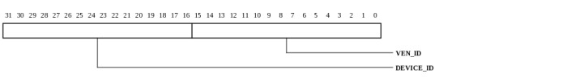
| Bits | Name | Type | Reset | Description
| 31:16 | DEVICE_ID | RO | 0 | writable through the MAC_STANDARD interface |
| 15:0 | VEN_ID | RO | 0 | writable through the MAC_STANDARD interface |
|
|---|
Command Register (TRIO_PCIE_EP_COMMAND: 0x0004)
Command Register
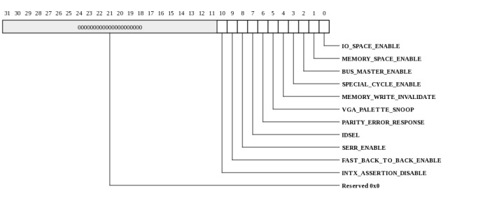
| Bits | Name | Type | Reset | Description
| 10 | INTX_ASSERTION_DISABLE | RW | 0 | |
| 9 | FAST_BACK_TO_BACK_ENABLE | RO | 0 | Not applicable for PCI Express. Must be hardwired to 0. |
| 8 | SERR_ENABLE | RW | 0 | |
| 7 | IDSEL | RO | 0 | IDSEL Stepping/Wait Cycle Control Not applicable for PCI Express. Must be hardwired to 0 |
| 6 | PARITY_ERROR_RESPONSE | RW | 0 | |
| 5 | VGA_PALETTE_SNOOP | RO | 0 | Not applicable for PCI Express. Must be hardwired to 0. |
| 4 | MEMORY_WRITE_INVALIDATE | RO | 0 | Not applicable for PCI Express. Must be hardwired to 0. |
| 3 | SPECIAL_CYCLE_ENABLE | RO | 0 | Not applicable for PCI Express. Must be hardwired to 0. |
| 2 | BUS_MASTER_ENABLE | RW | 0 | |
| 1 | MEMORY_SPACE_ENABLE | RW | 0 | |
| 0 | IO_SPACE_ENABLE | RW | 0 | |
|
|---|
Status Register (TRIO_PCIE_EP_STATUS: 0x0006)
Status Register
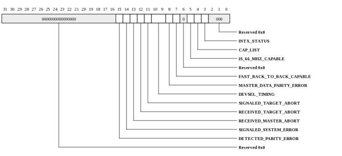
| Bits | Name | Type | Reset | Description
| 15 | DETECTED_PARITY_ERROR | RW | 0 | |
| 14 | SIGNALED_SYSTEM_ERROR | RW | 0 | |
| 13 | RECEIVED_MASTER_ABORT | RW | 0 | |
| 12 | RECEIVED_TARGET_ABORT | RW | 0 | |
| 11 | SIGNALED_TARGET_ABORT | RW | 0 | |
| 10:9 | DEVSEL_TIMING | RO | 0 | Not applicable for PCI Express. Hardwired to 0. |
| 8 | MASTER_DATA_PARITY_ERROR | RW | 0 | |
| 7 | FAST_BACK_TO_BACK_CAPABLE | RO | 0 | Not applicable for PCI Express. Hardwired to 0. |
| 5 | IS_66_MHZ_CAPABLE | RO | 0 | Not applicable for PCI Express. Hardwired to 0. |
| 4 | CAP_LIST | RO | 1 | Indicates presence of an extended capability item. Hardwired to 1. |
| 3 | INTX_STATUS | RO | 0 | |
|
|---|
Revision ID Register (TRIO_PCIE_EP_REVISION_ID: 0x0008)
Revision ID Register

| Bits | Name | Type | Reset | Description
| 7:0 | VAL | RO | 0 | Revision ID, writable through the MAC_STANDARD interface |
|
|---|
Class Code Register (TRIO_PCIE_EP_CLASS_CODE: 0x0009)
Class Code Register
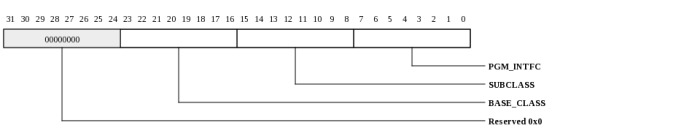
| Bits | Name | Type | Reset | Description
| 23:16 | BASE_CLASS | RO | 0 | Base Class Code, writable through the MAC_STANDARD interface |
| 15:8 | SUBCLASS | RO | 0 | Subclass Code, writable through the MAC_STANDARD interface |
| 7:0 | PGM_INTFC | RO | 0 | Programming Interface, writable through the MAC_STANDARD interface |
|
|---|
Cache Line Size Register (TRIO_PCIE_EP_CACHE_LINE_SIZE: 0x000c)
Cache Line Size Register
| Bits | Name | Type | Reset | Description
| 7:0 | CACHE_LINE_SIZE | RW | 0 | The Cache Line Size register is RW for legacy compatibility purposes and is not applicable to PCI Express device functionality. Writing to the Cache Line Size register does not impact functionality of the MAC. |
|
|---|
Master Latency Timer Register (TRIO_PCIE_EP_MASTER_LATENCY_TIMER: 0x000d)
Master Latency Timer Register
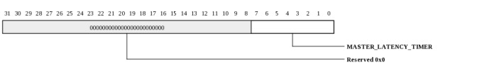
| Bits | Name | Type | Reset | Description
| 7:0 | MASTER_LATENCY_TIMER | RO | 0 | Not applicable for PCI Express, hardwired to 0. |
|
|---|
Header Type Register (TRIO_PCIE_EP_HDR_TYPE: 0x000e)
Header Type Register
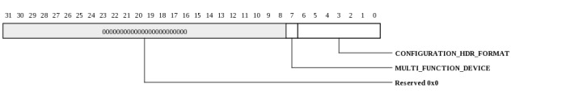
| Bits | Name | Type | Reset | Description
| 7 | MULTI_FUNCTION_DEVICE | RO | 0 | The default value is 0 for a single function device or 1 for a multi-function device. The Multi Function Device bit is writable through the MAC_STANDARD interface. |
| 6:0 | CONFIGURATION_HDR_FORMAT | RO | 0 | Hardwired to 0 for type 0. Byte: 3 |
|
|---|
BIST Register (TRIO_PCIE_EP_BIST: 0x000f)
BIST Register

| Bits | Name | Type | Reset | Description
| 7:0 | VAL | RO | 0 | The BIST register functions are not supported by the MAC. All 8 bits of the BIST register are hardwired to 0. |
|
|---|
Base Address Register 0 (TRIO_PCIE_EP_BASE_ADDR0: 0x0010)
Base Address Register 0
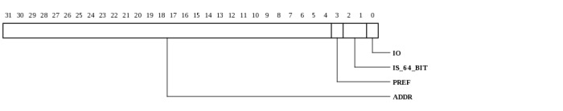
| Bits | Name | Type | Reset | Description
| 31:4 | ADDR | RW | 0 | BAR 0 base address bits (for a 64-bit BAR, the remaining upper address bits are in BAR 1). BAR0 is 8 MB by default. The BAR0_MASK register, accessible via MAC_PROTECTED space, determines which address bits are masked and thus the BAR size. |
| 3 | PREF | RO | 0 | If BAR 0 is a memory BAR, bit 3 indicates if the memory region is prefetchable: 0 = Non-prefetchable 1 = Prefetchable. This field is writable through the MAC_STANDARD interface. |
| 2:1 | IS_64_BIT | RO | 1 | If BAR 0 is a memory BAR, bits [2:1] determine the BAR type: 0 = 32-bit BAR 2 = 64-bit BAR If BAR 0 is an I/O BAR, bit 2 the least significant bit of the base address and bit 1 is 0. This field is writable through the MAC_STANDARD interface. |
| 0 | IO | RO | 0 | 0 indicates that this is a memory bar. 1 indicates IO BAR. This field is writable through the MAC_STANDARD interface. IO BARs are not supported on TileGX. |
|
|---|
Base Address-0 Mask Register (TRIO_PCIE_EP_BAR0_MASK: 0x0010)
Base Address-0 mask used to size bar0. This register is write only and is only accessible via the MAC_PROTECTED register space.

| Bits | Name | Type | Reset | Description
| 31:8 | MASK | WO | 007fffh | Indicates which BAR-0 address to mask. For example, to set BAR-0 to be 8 MB, the MASK field would be set to 0x7fff |
| 0 | ENA | WO | 1 | When 1, bar0 is enabled. When 0, the MASK is reset to all zeros. When setting ENA to 1, the BAR0_MASK must be written again after the ENA is written to set the size. |
|
|---|
Base Address Register 1 (TRIO_PCIE_EP_BASE_ADDR1: 0x0014)
Base Address Register 1

| Bits | Name | Type | Reset | Description
| 31:0 | VAL | RO | 0 | BAR 0 is a 64-bit BAR so BAR 1 contains the upper 32 bits of the BAR 0 base address (bits [63:32]). |
|
|---|
Base Address-1 Mask Register (TRIO_PCIE_EP_BAR1_MASK: 0x0014)
Base Address-1 mask used to size the upper 32-bits of 64-bit bar0. This register is write only and is only accessible via the MAC_PROTECTED register space.

| Bits | Name | Type | Reset | Description
| 31:0 | MASK | WO | 0 | Provides the sizing for the upper-32 bits of the 64-bit BAR-0. When BAR0_MASK.ENA is 0, the MASK is reset to all zeros. |
|
|---|
Base Address Register 2 (TRIO_PCIE_EP_BASE_ADDR2: 0x0018)
Base Address Register 2
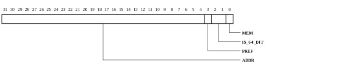
| Bits | Name | Type | Reset | Description
| 31:4 | ADDR | RO | 0 | BAR 2 base address bits (for a 64-bit BAR, the remaining upper address bits are in BAR 3). BAR2 is 128 MB by default. The BAR2_MASK register, accessible via MAC_PROTECTED space, determines which address bits are masked and thus the BAR size. |
| 3 | PREF | RO | 1 | If BAR 2 is a memory BAR, bit 3 indicates if the memory region is prefetchable: 0 = Non-prefetchable 1 = Prefetchable If BAR 2 is an I/O BAR, bit 3 is the second least significant bit of the base address. Bits [3:0] are writable through the MAC_STANDARD interface. |
| 2:1 | IS_64_BIT | RO | 1 | If BAR 2 is a memory BAR, bits [2:1] determine the BAR type: 0 = 32-bit BAR 2 = 64-bit BAR If BAR 2 is an I/O BAR, bit 2 the least significant bit of the base address and bit 1 is 0. Bits [3:0] are Writable through the MAC_STANDARD interface. |
| 0 | MEM | RO | 0 | 1 = BAR 2 is an I/O BAR Bits [3:0] are writable through the MAC_STANDARD interface. IO BARs are not supported on TileGX. |
|
|---|
Base Address-0 Mask Register (TRIO_PCIE_EP_BAR2_MASK: 0x0018)
Base Address-2 mask used to size bar2. This register is write only and is only accessible via the MAC_PROTECTED register space.

| Bits | Name | Type | Reset | Description
| 31:8 | MASK | WO | 07ffffh | Indicates which BAR-2 address to mask. For example, to set BAR-2 to be 256 MB, the MASK field would be set to 0xfffff |
| 0 | ENA | WO | 1 | When 1, bar2 is enabled. When 0, the MASK is reset to all zeros. When setting ENA to 1, the BAR2_MASK must be written again after the ENA is written to set the size. |
|
|---|
Base Address Register 3 (TRIO_PCIE_EP_BASE_ADDR3: 0x001c)
Base Address Register 3

| Bits | Name | Type | Reset | Description
| 31:0 | VAL | RO | 0 | BAR 2 is a 64-bit BAR so BAR 3 contains the upper 32 bits of the BAR 2 base address (bits [63:32]). |
|
|---|
Base Address-3 Mask Register (TRIO_PCIE_EP_BAR3_MASK: 0x001c)
Base Address-3 mask used to size the upper 32-bits of 64-bit bar2. This register is write only and is only accessible via the MAC_PROTECTED register space.
| Bits | Name | Type | Reset | Description
| 31:0 | MASK | WO | 0 | Provides the sizing for the upper-32 bits of the 64-bit BAR-2. When BAR2_MASK.ENA is 0, the MASK is reset to all zeros. |
|
|---|
CardBus CIS Pointer Register (TRIO_PCIE_EP_CARDBUS_CIS_PTR: 0x0028)
CardBus CIS Pointer Register
| Bits | Name | Type | Reset | Description
| 31:0 | CARDBUS_CIS_PTR | RO | 0 | Optional, writable through the MAC_STANDARD interface. |
|
|---|
Subsystem ID and Subsystem Vendor ID Register (TRIO_PCIE_EP_SUBSYS_ID_SUBSYS_VEN_ID: 0x002c)
Subsystem ID and Subsystem Vendor ID Register
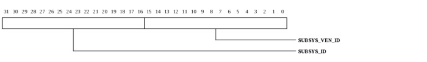
| Bits | Name | Type | Reset | Description
| 31:16 | SUBSYS_ID | RO | 0 | Writable through the MAC_STANDARD interface. |
| 15:0 | SUBSYS_VEN_ID | RO | 0 | Writable through the MAC_STANDARD interface. |
|
|---|
Expansion ROM Base Address Register (TRIO_PCIE_EP_EXPANSION_ROM_BASE_ADDRESS: 0x0030)
Expansion ROM Base Address Register
| Bits | Name | Type | Reset | Description
| 31:11 | M_ADDR | RO | 0 | |
| 0 | M_ENABLE | RO | 0 | |
|
|---|
Capability Pointer Register (TRIO_PCIE_EP_CAP_PTR: 0x0034)
Capability Pointer Register
| Bits | Name | Type | Reset | Description
| 7:0 | FIRST_CAP_PTR | RO | 0 | |
|
|---|
Interrupt Line Register (TRIO_PCIE_EP_INTERRUPT_LINE: 0x003c)
Interrupt Line Register
| Bits | Name | Type | Reset | Description
| 7:0 | INTERRUPT_LINE | RW | ffh | Value in this register is system architecture specific. POST software will write the routing information into this register as it initializes and configures the system. |
|
|---|
Interrupt Pin Register (TRIO_PCIE_EP_INTERRUPT_PIN: 0x003d)
Interrupt Pin Register
| Bits | Name | Type | Reset | Description
| 7:0 | INTERRUPT_PIN | RO | 0 | Identifies the legacy interrupt Message that the device (or device function) uses. Valid values are: 00h: The device (or function) does not use legacy interrupt 01h: The device (or function) uses INTA 02h: The device (or function) uses INTB 03h: The device (or function) uses INTC 04h: The device (or function) uses INTD In a single-function configuration, the MAC only uses INTA. The Interrupt Pin register is writable through the MAC_STANDARD interface. |
|
|---|
PM Capability ID Register (TRIO_PCIE_EP_PM_CAP_ID: 0x0040)
PM Capability ID Register
| Bits | Name | Type | Reset | Description
| 7:0 | VAL | RO | 1 | Power Management Capability ID |
|
|---|
PM Next Item Pointer (TRIO_PCIE_EP_PM_NEXT_ITEM_PTR: 0x0041)
PM Next Item Pointer

| Bits | Name | Type | Reset | Description
| 7:0 | NEXT_CAP_PTR | RO | 0 | |
|
|---|
Power Management Capabilities Register (TRIO_PCIE_EP_POWER_MANAGEMENT_CAP: 0x0042)
Power Management Capabilities Register
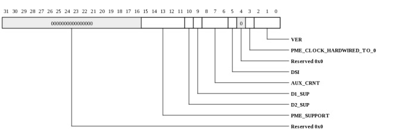
| Bits | Name | Type | Reset | Description
| 15:11 | PME_SUPPORT | RO | 0 | Identifies the power states from which the MAC can generate PME Messages. A value of 0 for any bit indicates that the device (or function) is not capable of generating PME Messages while in that power state: Bit 11: If set, PME Messages can be generated from D0 Bit 12: If set, PME Messages can be generated from D1 Bit 13: If set, PME Messages can be generated from D2 Bit 14: If set, PME Messages can be generated from D3hot Bit 15: If set, PME Messages can be generated from D3cold The PME_Support field is writable through the MAC_STANDARD interface. |
| 10 | D2_SUP | RO | 0 | D2 Support, writable through the MAC_STANDARD interface |
| 9 | D1_SUP | RO | 0 | D1 Support, writable through the MAC_STANDARD interface |
| 8:6 | AUX_CRNT | RO | 0 | AUX Current, writable through the MAC_STANDARD interface |
| 5 | DSI | RO | 0 | Device Specific Initialization, writable through the MAC_STANDARD interface |
| 3 | PME_CLOCK_HARDWIRED_TO_0 | RO | 0 | |
| 2:0 | VER | RO | 3 | Power Management specification version, writable through the MAC_STANDARD interface |
|
|---|
Power Management Control and Status Register (TRIO_PCIE_EP_POWER_MANAGEMENT_CTLSTATUS: 0x0044)
Power Management Control and Status Register
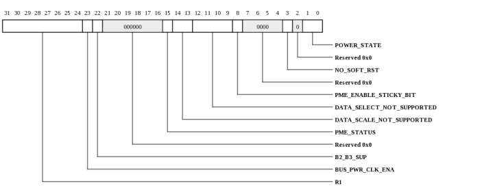
| Bits | Name | Type | Reset | Description
| 31:24 | R1 | RO | 0 | Data register for additional information (not supported) |
| 23 | BUS_PWR_CLK_ENA | RO | 0 | Bus Power/Clock Control Enable, hardwired to 0 |
| 22 | B2_B3_SUP | RO | 0 | Hardwired to zero |
| 15 | PME_STATUS | RW | 0 | Indicates if a previously enabled PME event occurred or not. |
| 14:13 | DATA_SCALE_NOT_SUPPORTED | RO | 0 | |
| 12:9 | DATA_SELECT_NOT_SUPPORTED | RO | 0 | |
| 8 | PME_ENABLE_STICKY_BIT | RW | 0 | A value of 1 indicates that the device is enabled to generate PME. |
| 3 | NO_SOFT_RST | RO | 0 | No Soft Reset, writable through the MAC_STANDARD interface |
| 1:0 | POWER_STATE | RW | 0 | Controls the device power state: 00b: D0 01b: D1 10b: D2 11b: D3 The written value is ignored if the specific state is not supported. |
|
|---|
MSI Capability ID Register (TRIO_PCIE_EP_MSI_CAP_ID: 0x0050)
MSI Capability ID Register
| Bits | Name | Type | Reset | Description
| 7:0 | MSI_CAP_ID | RO | 5 | |
|
|---|
MSI Next Item Pointer (TRIO_PCIE_EP_MSI_NEXT_ITEM_PTR: 0x0051)
MSI Next Item Pointer
| Bits | Name | Type | Reset | Description
| 7:0 | NEXT_CAP_PTR | RO | 0 | |
|
|---|
MSI Control Register (TRIO_PCIE_EP_MSI_CONTROL: 0x0052)
MSI Control Register
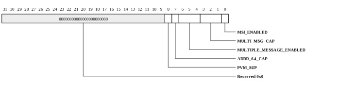
| Bits | Name | Type | Reset | Description
| 8 | PVM_SUP | RO | 0 | MSI Per Vector Masking (PVM) supported |
| 7 | ADDR_64_CAP | RO | 0 | 64-bit Address Capable, writable through the MAC_STANDARD interface |
| 6:4 | MULTIPLE_MESSAGE_ENABLED | RW | 0 | Indicates that multiple Message mode is enabled by system software. The number of Messages enabled must be less than or equal to the Multiple Message Capable value. |
| 3:1 | MULTI_MSG_CAP | RO | 0 | Multiple Message Capable, writable through the MAC_STANDARD interface |
| 0 | MSI_ENABLED | RW | 0 | When set, INTx must be disabled. |
|
|---|
MSI Lower 32 Bits Address Register (TRIO_PCIE_EP_MSI_LOWER_32_BITS_ADDRESS: 0x0054)
MSI Lower 32 Bits Address Register
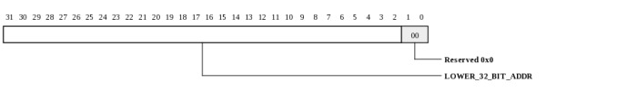
| Bits | Name | Type | Reset | Description
| 31:2 | LOWER_32_BIT_ADDR | RW | 0 | |
|
|---|
MSI Upper 32 bits Address Register (TRIO_PCIE_EP_MSI_UPPER_32_BITS_ADDRESS: 0x0058)
MSI Upper 32 bits Address Register
| Bits | Name | Type | Reset | Description
| 31:0 | UPPER_32_BIT_ADDR | RW | 0 | |
|
|---|
MSI Data Register (TRIO_PCIE_EP_MSI_DATA: 0x005c)
MSI Data Register
| Bits | Name | Type | Reset | Description
| 15:0 | MSI_DATA | RW | 0 | Pattern assigned by system software, bits [4:0] are OR-ed with MSI_VECTOR to generate 32 MSI Messages per function. |
|
|---|
MSI Mask Bit Register (TRIO_PCIE_EP_MSI_MASK_BIT: 0x0060)
MSI Mask Bit Register
| Bits | Name | Type | Reset | Description
| 31:0 | MSI_MASK | RW | 0 | For each Mask bit that is set, the function is prohibited from sending the associated message. |
|
|---|
MSI Pending Bits Register (TRIO_PCIE_EP_MSI_PENDING_BITS: 0x0064)
MSI Pending Bits Register
| Bits | Name | Type | Reset | Description
| 31:0 | MSI_PENDING_BITS | RO | 0 | For each Pending bit that is set, the function has a pending associated message. |
|
|---|
PF Capability ID Register (TRIO_PCIE_EP_PF_CAP_ID: 0x0070)
PF Capability ID Register
| Bits | Name | Type | Reset | Description
| 7:0 | PF_PCI_EXPRESS_CAP_ID | RO | 10h | |
|
|---|
PF Next Item Pointer (TRIO_PCIE_EP_PF_NEXT_ITEM_PTR: 0x0071)
PF Next Item Pointer
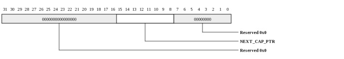
| Bits | Name | Type | Reset | Description
| 15:8 | NEXT_CAP_PTR | RO | 0 | |
|
|---|
PCI Express Capabilities Register (TRIO_PCIE_EP_PCI_EXPRESS_CAP: 0x0072)
PCI Express Capabilities Register
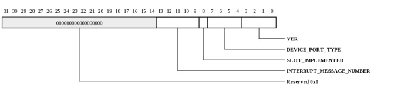
| Bits | Name | Type | Reset | Description
| 13:9 | INTERRUPT_MESSAGE_NUMBER | RO | 0 | Updated by hardware, writable through the MAC_STANDARD interface. |
| 8 | SLOT_IMPLEMENTED | RW | 0 | This bit is writable through the MAC_STANDARD interface. However, it must 0 for an Endpoint device. Therefore, the application must not write a 1 to this bit. |
| 7:4 | DEVICE_PORT_TYPE | RO | 0 | |
| 3:0 | VER | RO | 2 | PCI Express Capability Version |
|
|---|
Device Capabilities Register (TRIO_PCIE_EP_DEVICE_CAP: 0x0074)
Device Capabilities Register
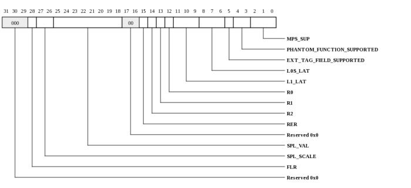
| Bits | Name | Type | Reset | Description
| 28 | FLR | RO | 0 | Function Level Reset Capability |
| 27:26 | SPL_SCALE | RO | 0 | Captured Slot Power Limit Scale From Message from RC, upstream port only. |
| 25:18 | SPL_VAL | RO | 0 | Captured Slot Power Limit Value From Message from RC, upstream port only. |
| 15 | RER | RO | 1 | Role-Based Error Reporting, writable through the MAC_STANDARD interface. Required to be set for device compliant to 1.1 spec and later. |
| 14 | R2 | RO | 0 | Undefined for PCI Express 1.1 (Was Power Indicator Present for PCI Express 1.0a) |
| 13 | R1 | RO | 0 | Undefined for PCI Express 1.1 (Was Attention Indicator Present for PCI Express 1.0a) |
| 12 | R0 | RO | 0 | r0 Undefined for PCI Express 1.1 (Was Attention Button Present for PCI Express 1.0a) |
| 11:9 | L1_LAT | RO | 0 | Endpoint L1 Acceptable Latency, writable through the MAC_STANDARD interface |
| 8:6 | L0S_LAT | RO | 0 | Endpoint L0s Acceptable Latency, writable through the MAC_STANDARD interface |
| 5 | EXT_TAG_FIELD_SUPPORTED | RO | 0 | This bit is writable through the MAC_STANDARD interface. |
| 4:3 | PHANTOM_FUNCTION_SUPPORTED | RO | 0 | This field is writable through the MAC_STANDARD interface. However, Phantom Function is not supported. Therefore, the application must not write any value other than 0x0 to this field. |
| 2:0 | MPS_SUP | RO | 0 | Max_Payload_Size Supported, writable through the MAC_STANDARD interface |
|
|---|
Device Control Register (TRIO_PCIE_EP_DEVICE_CONTROL: 0x0078)
Device Control Register
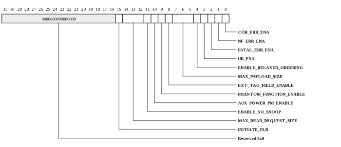
| Bits | Name | Type | Reset | Description
| 15 | INITIATE_FLR | RW | 0 | |
| 14:12 | MAX_READ_REQUEST_SIZE | RW | 2 | |
| 11 | ENABLE_NO_SNOOP | RW | 0 | |
| 10 | AUX_POWER_PM_ENABLE | RW | 0 | |
| 9 | PHANTOM_FUNCTION_ENABLE | RW | 0 | |
| 8 | EXT_TAG_FIELD_ENABLE | RW | 0 | |
| 7:5 | MAX_PAYLOAD_SIZE | RW | 0 | |
| 4 | ENABLE_RELAXED_ORDERING | RW | 1 | |
| 3 | UR_ENA | RW | 0 | Unsupported Request Reporting Enable |
| 2 | FATAL_ERR_ENA | RW | 0 | |
| 1 | NF_ERR_ENA | RW | 0 | Non-Fatal Error Reporting Enable |
| 0 | COR_ERR_ENA | RW | 0 | Correctable Error Reporting Enable |
|
|---|
Device Status Register (TRIO_PCIE_EP_DEVICE_STATUS: 0x007a)
Device Status Register
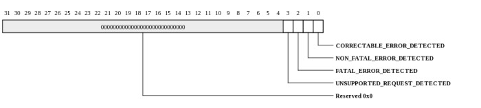
| Bits | Name | Type | Reset | Description
| 3 | UNSUPPORTED_REQUEST_DETECTED | RW | 0 | Errors are logged in this register regardless of whether error reporting is enabled in the Device Control register. |
| 2 | FATAL_ERROR_DETECTED | RW | 0 | Errors are logged in this register regardless of whether error reporting is enabled in the Device Control register. |
| 1 | NON_FATAL_ERROR_DETECTED | RW | 0 | Errors are logged in this register regardless of whether error reporting is enabled in the Device Control register. |
| 0 | CORRECTABLE_ERROR_DETECTED | RW | 0 | Errors are logged in this register regardless of whether error reporting is enabled in the Device Control register. |
|
|---|
Link Capabilities Register (TRIO_PCIE_EP_LINK_CAP: 0x007c)
Link Capabilities Register
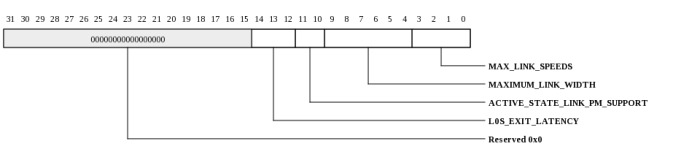
| Bits | Name | Type | Reset | Description
| 14:12 | L0S_EXIT_LATENCY | RO | 0 | Writable through the MAC_STANDARD interface. |
| 11:10 | ACTIVE_STATE_LINK_PM_SUPPORT | RO | 3 | Writable through the MAC_STANDARD interface. |
| 9:4 | MAXIMUM_LINK_WIDTH | RO | 0 | Indicates (x1, x4, x8). Writable through the MAC_STANDARD interface. |
| 3:0 | MAX_LINK_SPEEDS | RO | 2 | Indicates the supported maximum Link speeds of the associated Port. The encoding is the binary value of the bit location in the Supported Link Speeds Vector (in the Link Capabilities 2 register) that corresponds to the maximum Link speed. This field is writable through the MAC_STANDARD interface. |
|
|---|
Link Control Register (TRIO_PCIE_EP_LINK_CONTROL: 0x0080)
Link Control Register
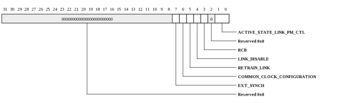
| Bits | Name | Type | Reset | Description
| 7 | EXT_SYNCH | RW | 0 | |
| 6 | COMMON_CLOCK_CONFIGURATION | RW | 0 | |
| 5 | RETRAIN_LINK | RO | 0 | Note: This bit is not applicable and is reserved for Endpoints. |
| 4 | LINK_DISABLE | RO | 0 | Note: This bit is not applicable and is reserved for Endpoints. |
| 3 | RCB | RW | 0 | Read Completion Boundary (RCB) |
| 1:0 | ACTIVE_STATE_LINK_PM_CTL | RW | 0 | |
|
|---|
Link Status Register (TRIO_PCIE_EP_LINK_STATUS: 0x0082)
Link Status Register
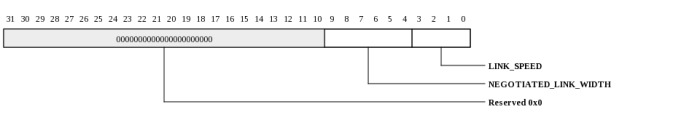
| Bits | Name | Type | Reset | Description
| 9:4 | NEGOTIATED_LINK_WIDTH | RO | 1 | Set automatically by hardware after Link initialization. Value is undefined when link is not up. |
| 3:0 | LINK_SPEED | RO | 0 | Indicates the negotiated Link speed. The encoding is the binary value of the bit location in the Supported Link Speeds Vector (in the Link Capabilities 2 register) that corresponds to the current Link speed. Possible values are: 0001b (Gen1 2.5 GT/s) 0010b (Gen2 5.0 GT/s) 0100b (Gen3 8.0 GT/s) |
|
|---|
Device Capabilities 2 Register (TRIO_PCIE_EP_DEVICE_CAP_2: 0x0094)
Device Capabilities 2 Register
| Bits | Name | Type | Reset | Description
| 3:0 | CPL_TO_DIS_SUP | RO | 0 | Completion Timeout Disable Supported |
|
|---|
Device Control 2 Register (TRIO_PCIE_EP_DEVICE_CTL2: 0x0098)
Device Control 2 Register
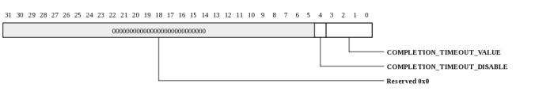
| Bits | Name | Type | Reset | Description
| 4 | COMPLETION_TIMEOUT_DISABLE | RW | 0 | |
| 3:0 | COMPLETION_TIMEOUT_VALUE | RW | 0 | 0000b Default range: 50 s to 50 ms 0001b 50 s to 100 s 0010b 1 ms to 10 ms 0101b 16 ms to 55 ms 0110b 65 ms to 210 ms 1001b 260 ms to 900 ms 1010b 1 s to 3.5 s 1101b 4 s to 13 s 1110b 17 s to 64 s Values not defined above are reserved. If the default range is chosen, the MAC will have a timeout in the range of 16 ms to 55 ms. |
|
|---|
Link Capabilities 2 Register (TRIO_PCIE_EP_LINK_CAP_2: 0x009c)
Link Capabilities 2 Register
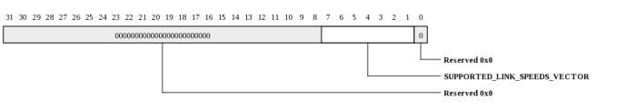
| Bits | Name | Type | Reset | Description
| 7:1 | SUPPORTED_LINK_SPEEDS_VECTOR | RO | 3 | Indicates the supported Link speeds of the associated Port. For each bit, a value of 1b indicates that the corresponding Link speed is supported; otherwise, the Link speed is not supported. Bit definitions are: Bit 1 2.5 GT/s Bit 2 5.0 GT/s Bit 3 8.0 GT/s Bits 7:4 reserved This field is writable through the MAC_STANDARD interface. |
|
|---|
Link Control 2 Register (TRIO_PCIE_EP_LINK_CTL2: 0x00a0)
Link Control 2 Register
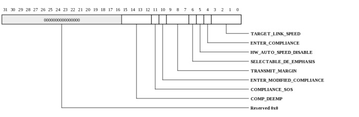
| Bits | Name | Type | Reset | Description
| 15:12 | COMP_DEEMP | RW | 0 | Compliance Pre-set/ De-emphasis |
| 11 | COMPLIANCE_SOS | RW | 0 | When set to 1b, the LTSSM is required to send SKP Ordered Sets periodically in between the (modified) compliance patterns. Note: When the Link is operating at 2.5 GT/s, the setting of this bit has no effect. |
| 10 | ENTER_MODIFIED_COMPLIANCE | RW | 0 | When this bit is set to 1b, the device transmits a modified compliance pattern if the LTSSM enters Polling. Compliance state. |
| 9:7 | TRANSMIT_MARGIN | RW | 0 | This field controls the value of the non-de-emphasized voltage level at the Transmitter pins: 000: 800-1200 mV for full swing 400-600 mV for halfswing 001-010: values must be monotonic with a non-zero slope 011: 200-400 mV for full-swing and 100-200 mV for halfswing 100-111: reserved This field is reset to 000b on entry to the LTSSM Polling. Compliance substate. Components that support only the 2.5 GT/s speed are permitted to hard-wire this bit to 0b. When operating in 5.0 GT/s mode with full swing, the de-emphasis ratio must be maintained within +/- 1 dB from the specification-defined operational value (either -3.5 or -6 dB). |
| 6 | SELECTABLE_DE_EMPHASIS | RW | 0 | When the Link is operating at 5.0 GT/s speed, selects the level of de-emphasis: 1: -3.5 dB 0: -6 dB When the Link is operating at 2.5 GT/s speed, the setting of this bit has no effect. Components that support only the 2.5 GT/s speed are permitted to hardwire this bit to 0b. Not applicable for an upstream Port or Endpoint device. Hardwired to 0. |
| 5 | HW_AUTO_SPEED_DISABLE | RO | 0 | When cfg_hw_auto_sp_dis signal is asserted, the application must disable hardware from changing the Link speed for device-specific reasons other than attempting to correct unreliable Link operation by reducing Link speed. Initial transition to the highest supported common link speed is not blocked by this signal. |
| 4 | ENTER_COMPLIANCE | RW | 0 | Software is permitted to force a link to enter Compliance mode at the speed indicated in the Target Link Speed field by setting this bit to 1b in both components on a link and then initiating a hot reset on the link. The default value of this field following Fundamental Reset is 0b. |
| 3:0 | TARGET_LINK_SPEED | RW | 0 | For Downstream ports, this field sets an upper limit on link operational speed by restricting the values advertised by the upstream component in its training sequences: The encoding is the binary value of the bit in the Supported Link Speeds Vector (in the Link Capabilities 2 register) that corresponds to the desired target Link speed. 0000001b (Gen1 2.5 GT/s) 0000010b (Gen2 5.0 GT/s) 0000100b (Gen3 8.0 GT/s) All other encodings are reserved. If a value is written to this field that does not correspond to a speed included in the Supported Link Speeds field, the result is undefined. *The default value of this field is the highest link speed supported by the component (as reported in the Max Link Speed field of the Link Capabilities Register) unless the corresponding platform / form factor requires a different default value. Components that support only the 2.5 GT/s speed are permitted to hardwire this field to 0000b. |
|
|---|
Link Status 2 Register (TRIO_PCIE_EP_LINK_STATUS_2: 0x00a2)
Link Status 2 Register
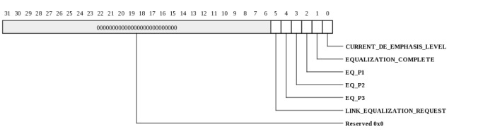
| Bits | Name | Type | Reset | Description
| 5 | LINK_EQUALIZATION_REQUEST | RW | 0 | |
| 4 | EQ_P3 | RO | 0 | Equalization Phase 3 Successful |
| 3 | EQ_P2 | RO | 0 | Equalization Phase 2 Successful |
| 2 | EQ_P1 | RO | 0 | Equalization Phase 1 Successful |
| 1 | EQUALIZATION_COMPLETE | RO | 0 | |
| 0 | CURRENT_DE_EMPHASIS_LEVEL | RO | 0 | |
|
|---|
MSI-X Capability ID Register (TRIO_PCIE_EP_MSI_X_CAP_ID: 0x00b0)
MSI-X Capability ID Register
| Bits | Name | Type | Reset | Description
| 7:0 | MSI_X_CAP_ID | RO | 11h | |
|
|---|
MSI-X Next Item Pointer (TRIO_PCIE_EP_MSI_X_NEXT_ITEM_PTR: 0x00b1)
MSI-X Next Item Pointer

| Bits | Name | Type | Reset | Description
| 7:0 | NEXT_CAP_PTR | RO | 0 | |
|
|---|
MSI-X Control Register (TRIO_PCIE_EP_MSI_X_CONTROL: 0x00b2)
MSI-X Control Register
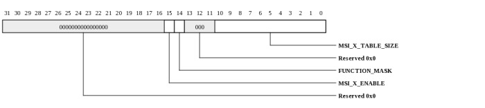
| Bits | Name | Type | Reset | Description
| 15 | MSI_X_ENABLE | RW | 0 | If MSI-X is enabled, MSI and INTx must be disabled. |
| 14 | FUNCTION_MASK | RW | 0 | 1: All vectors associated with the function are masked, regardless of their respective per-vector Mask bits. 0: Each vector s Mask bit determines whether the vector is masked or not. |
| 10:0 | MSI_X_TABLE_SIZE | RO | 0 | Encoded as (Table Size - 1). For example, a value of 0x003 indicates the MSI-X Table Size is 4. |
|
|---|
MSI-X Table Offset and BIR Register (TRIO_PCIE_EP_MSI_X_TABLE_OFFSET_BIR: 0x00b4)
MSI-X Table Offset and BIR Register
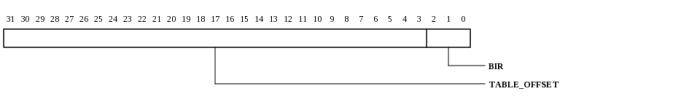
| Bits | Name | Type | Reset | Description
| 31:3 | TABLE_OFFSET | RO | 0 | Base address of the MSI-X Table, as an offset from the base address of the BAR indicated by the Table BIR bits. |
| 2:0 | BIR | RO | 0 | Table BAR Indicator Register (BIR) Indicates which BAR is used to map the MSI-X Table into memory space: 000: BAR0 001: BAR1 010: BAR2 011: BAR3 100: BAR4 101: BAR5 110: Reserved 111: Reserved |
|
|---|
MSI-X PBA Offset and BIR Register (TRIO_PCIE_EP_MSI_X_PBA_OFFSET_BIR: 0x00b8)
MSI-X PBA Offset and BIR Register
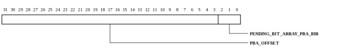
| Bits | Name | Type | Reset | Description
| 31:3 | PBA_OFFSET | RO | 0 | Base address of the MSI-X PBA, as an offset from the base address of the BAR indicated by the PBA BIR bits. |
| 2:0 | PENDING_BIT_ARRAY_PBA_BIR | RO | 0 | Indicates which BAR is used to map the MSI-X PBA into memory space: 000: BAR0 001: BAR1 010: BAR2 011: BAR3 100: BAR4 101: BAR5 110: Reserved 111: Reserved |
|
|---|
VPD Control and Capabilities Register (TRIO_PCIE_EP_VPD_CTLCAP: 0x00d0)
VPD Control and Capabilities Register
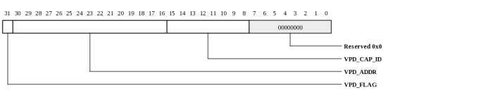
| Bits | Name | Type | Reset | Description
| 31 | VPD_FLAG | RW | 0 | |
| 30:16 | VPD_ADDR | RW | 0 | |
| 15:8 | VPD_CAP_ID | RW | 0 | |
|
|---|
VPD Data Register (TRIO_PCIE_EP_VPD_DATA: 0x00d4)
VPD Data Register
| Bits | Name | Type | Reset | Description
| 31:0 | VPD_DATA | RW | 0 | |
|
|---|
AER Capability Header (TRIO_PCIE_EP_AER_CAP_HDR: 0x0100)
AER Capability Header

| Bits | Name | Type | Reset | Description
| 31:20 | NEXT_CAP_OFFSET | RO | 0 | |
| 19:16 | CAP_VERSION | RO | 1 | |
| 15:0 | ID | RO | 1 | PCI Express Extended Capability ID Default value is 0x1 for Advanced Error Reporting. |
|
|---|
VF ARI Capability Header (TRIO_PCIE_EP_VF_ARI_CAP_HDR: 0x0100)
VF ARI Capability Header
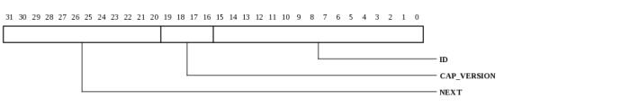
| Bits | Name | Type | Reset | Description
| 31:20 | NEXT | RO | 0 | Next Capability Offset, non MAC_STANDARD interface writable |
| 19:16 | CAP_VERSION | RO | 1 | |
| 15:0 | ID | RO | 14 | PCI Express Extended Capability ID |
|
|---|
Uncorrectable Error Status Register (TRIO_PCIE_EP_UNCORRECTABLE_ERROR_STATUS: 0x0104)
Uncorrectable Error Status Register
| Bits | Name | Type | Reset | Description
| 4 | PROT_ERR_STS | RW | 0 | Data Link Protocol Error Status |
|
|---|
VF ARI Capability Register (TRIO_PCIE_EP_VF_ARI_CAP: 0x0104)
VF ARI Capability Register

| Bits | Name | Type | Reset | Description
| 15:8 | NEXT_FUNCTION_NUMBER | RO | 0 | |
| 1 | ACS_CAP | RO | 0 | ACS Function Groups Capability (A) |
| 0 | MFVC_CAP | RO | 0 | MFVC Function Groups Capability (M) |
|
|---|
VF ARI Control Register (TRIO_PCIE_EP_VF_ARI_CONTROL: 0x0106)
VF ARI Control Register
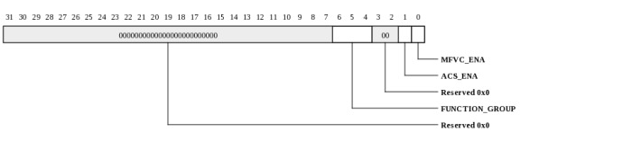
| Bits | Name | Type | Reset | Description
| 6:4 | FUNCTION_GROUP | RO | 0 | |
| 1 | ACS_ENA | RO | 0 | ACS Function Groups Enable (A) |
| 0 | MFVC_ENA | RO | 0 | MFVC Function Groups Enable (M) |
|
|---|
Uncorrectable Error Mask Register (TRIO_PCIE_EP_UNCORRECTABLE_ERROR_MASK: 0x0108)
Uncorrectable Error Mask Register
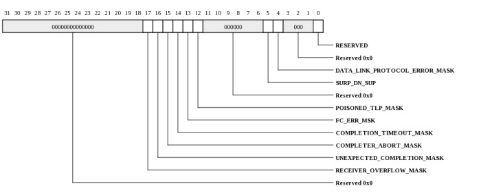
| Bits | Name | Type | Reset | Description
| 17 | RECEIVER_OVERFLOW_MASK | RW | 0 | |
| 16 | UNEXPECTED_COMPLETION_MASK | RW | 0 | |
| 15 | COMPLETER_ABORT_MASK | RW | 0 | |
| 14 | COMPLETION_TIMEOUT_MASK | RW | 0 | |
| 13 | FC_ERR_MSK | RW | 0 | Flow Control Protocol Error Mask |
| 12 | POISONED_TLP_MASK | RW | 0 | |
| 5 | SURP_DN_SUP | RO | 0 | Surprise Down Error Mask (not supported) |
| 4 | DATA_LINK_PROTOCOL_ERROR_MASK | RW | 0 | |
| 0 | RESERVED | RW | 0 | |
|
|---|
Uncorrectable Error Severity Register (TRIO_PCIE_EP_UNCORRECTABLE_ERROR_SEVERITY: 0x010c)
Uncorrectable Error Severity Register
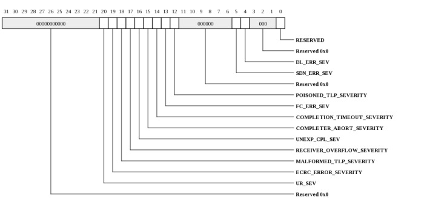
| Bits | Name | Type | Reset | Description
| 20 | UR_SEV | RW | 0 | Unsupported Request Error Severity |
| 19 | ECRC_ERROR_SEVERITY | RW | 0 | |
| 18 | MALFORMED_TLP_SEVERITY | RW | 1 | |
| 17 | RECEIVER_OVERFLOW_SEVERITY | RW | 1 | |
| 16 | UNEXP_CPL_SEV | RW | 0 | Unexpected Completion Severity |
| 15 | COMPLETER_ABORT_SEVERITY | RW | 0 | |
| 14 | COMPLETION_TIMEOUT_SEVERITY | RW | 0 | |
| 13 | FC_ERR_SEV | RW | 1 | Flow Control Protocol Error Severity |
| 12 | POISONED_TLP_SEVERITY | RW | 0 | |
| 5 | SDN_ERR_SEV | RO | 1 | Surprise Down Error Severity (not supported) |
| 4 | DL_ERR_SEV | RW | 1 | Data Link Protocol Error Severity |
| 0 | RESERVED | RW | 1 | |
|
|---|
Correctable Error Status Register (TRIO_PCIE_EP_CORRECTABLE_ERROR_STATUS: 0x0110)
Correctable Error Status Register
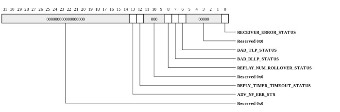
| Bits | Name | Type | Reset | Description
| 13 | ADV_NF_ERR_STS | RW | 0 | Advisory Non-Fatal Error Status |
| 12 | REPLY_TIMER_TIMEOUT_STATUS | RW | 0 | |
| 8 | REPLAY_NUM_ROLLOVER_STATUS | RW | 0 | |
| 7 | BAD_DLLP_STATUS | RW | 0 | |
| 6 | BAD_TLP_STATUS | RW | 0 | |
| 0 | RECEIVER_ERROR_STATUS | RW | 0 | |
|
|---|
Correctable Error Mask Register (TRIO_PCIE_EP_CORRECTABLE_ERROR_MASK: 0x0114)
Correctable Error Mask Register
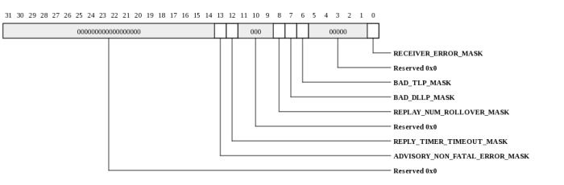
| Bits | Name | Type | Reset | Description
| 13 | ADVISORY_NON_FATAL_ERROR_MASK | RW | 1 | |
| 12 | REPLY_TIMER_TIMEOUT_MASK | RW | 0 | |
| 8 | REPLAY_NUM_ROLLOVER_MASK | RW | 0 | |
| 7 | BAD_DLLP_MASK | RW | 0 | |
| 6 | BAD_TLP_MASK | RW | 0 | |
| 0 | RECEIVER_ERROR_MASK | RW | 0 | |
|
|---|
Advanced Capabilities and Control Register (TRIO_PCIE_EP_ADVANCED_CAP_CONTROL: 0x0118)
Advanced Capabilities and Control Register
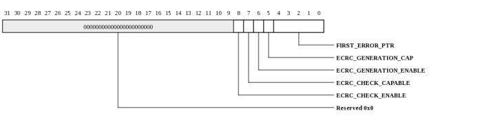
| Bits | Name | Type | Reset | Description
| 8 | ECRC_CHECK_ENABLE | RW | 0 | |
| 7 | ECRC_CHECK_CAPABLE | RO | 0 | |
| 6 | ECRC_GENERATION_ENABLE | RW | 0 | |
| 5 | ECRC_GENERATION_CAP | RO | 0 | |
| 4:0 | FIRST_ERROR_PTR | RO | 0 | |
|
|---|
Header Log Register (TRIO_PCIE_EP_HDR_LOG: 0x011c)
Header Log Register
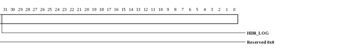
| Bits | Name | Type | Reset | Description
| 63:0 | HDR_LOG | RW | 0 | Header Log Register |
|
|---|
VC Extended Capability Header (TRIO_PCIE_EP_VC_EXT_CAP_HDR: 0x0140)
VC Extended Capability Header

| Bits | Name | Type | Reset | Description
| 31:20 | NEXT_CAP_OFFSET | RO | 0 | |
| 19:16 | CAP_VERSION | RO | 1 | |
| 15:0 | ID | RO | 2 | PCI Express Extended Capability The default value is 0x2 for VC Capability. |
|
|---|
Port VC Capability Register 1 (TRIO_PCIE_EP_PORT_VC_CAP_1: 0x0148)
Port VC Capability Register 1
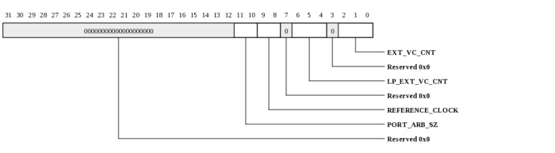
| Bits | Name | Type | Reset | Description
| 11:10 | PORT_ARB_SZ | RO | 0 | Port Arbitration Table Entry Size Not applicable for Endpoint, hardwired to 0. |
| 9:8 | REFERENCE_CLOCK | RO | 0 | Not applicable for Endpoint, hardwired to 0. |
| 6:4 | LP_EXT_VC_CNT | RO | 0 | Low Priority Extended VC Count, writable through the MAC_STANDARD interface |
| 2:0 | EXT_VC_CNT | RO | 0 | The default value is the one less than the number of VCs |
|
|---|
Port VC Capability Register 2 (TRIO_PCIE_EP_PORT_VC_CAP_2: 0x0148)
Port VC Capability Register 2
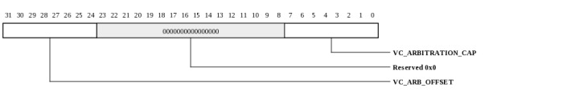
| Bits | Name | Type | Reset | Description
| 31:24 | VC_ARB_OFFSET | RO | 0 | VC Arbitration Table Offset (not supported) The default value is 0x00 (no arbitration table present). |
| 7:0 | VC_ARBITRATION_CAP | RO | 0 | Indicates which VC arbitration mode(s) the device supports, writable through the MAC_STANDARD interface: Bit 0: Device supports hardware fixed arbitration scheme. For the MAC, the scheme is 16-phase weighted round robin (WRR). Bit 1: Device supports 32-phase WRR. Bit 2: Device supports 64-phase WRR. Bit 3: Device supports 128-phase WRR. Bits 47: Reserved |
|
|---|
Port VC Control Register (TRIO_PCIE_EP_PORT_VC_CONTROL: 0x0150)
Port VC Control Register
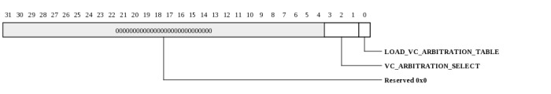
| Bits | Name | Type | Reset | Description
| 3:1 | VC_ARBITRATION_SELECT | RW | 0 | |
| 0 | LOAD_VC_ARBITRATION_TABLE | RW | 0 | |
|
|---|
Port VC Status Register (TRIO_PCIE_EP_PORT_VC_STATUS: 0x0150)
Port VC Status Register
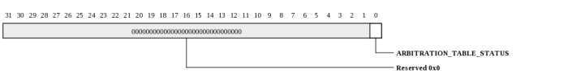
| Bits | Name | Type | Reset | Description
| 0 | ARBITRATION_TABLE_STATUS | RO | 0 | |
|
|---|
VC Resource Capability Register (0) (TRIO_PCIE_EP_VC_RESOURCE_CAP_0: 0x0150)
VC Resource Capability Register (0)
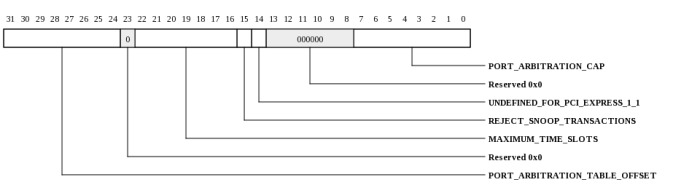
| Bits | Name | Type | Reset | Description
| 31:24 | PORT_ARBITRATION_TABLE_OFFSET | RO | 0 | Hardwired to 0x00, not applicable for Endpoints or devices that do not implement a port arbitration table. |
| 22:16 | MAXIMUM_TIME_SLOTS | RW | 0 | Not valid for Endpoints. |
| 15 | REJECT_SNOOP_TRANSACTIONS | RW | 0 | Not valid for Endpoints, must be 0x0. |
| 14 | UNDEFINED_FOR_PCI_EXPRESS_1_1 | RO | 0 | (Was Advanced Packet Switching for PCI Express 1.0a) |
| 7:0 | PORT_ARBITRATION_CAP | RO | 0 | |
|
|---|
VC Resource Control Register (0) (TRIO_PCIE_EP_VC_RESOURCE_CTL0: 0x0150)
VC Resource Control Register (0)
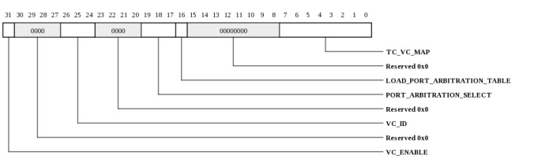
| Bits | Name | Type | Reset | Description
| 31 | VC_ENABLE | RO | 1 | Hardwired to 1 for the first VC. |
| 26:24 | VC_ID | RO | 0 | Hardwired to 0 for VC0. |
| 19:17 | PORT_ARBITRATION_SELECT | RW | 0 | Hardwired to 0 for Endpoint. |
| 16 | LOAD_PORT_ARBITRATION_TABLE | RW | 0 | Not applicable for Endpoint. |
| 7:0 | TC_VC_MAP | RW | ffh | Bit 0 is hardwired to 1; bits 7:1 are RW. |
|
|---|
VC Resource Status Register (0) (TRIO_PCIE_EP_VC_RESOURCE_STATUS_0: 0x0150)
VC Resource Status Register (0)
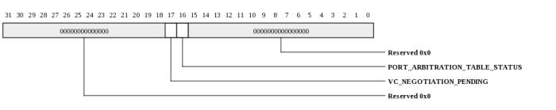
| Bits | Name | Type | Reset | Description
| 17 | VC_NEGOTIATION_PENDING | RO | 1 | |
| 16 | PORT_ARBITRATION_TABLE_STATUS | RO | 0 | |
|
|---|
VC Resource Capability Register (N) (TRIO_PCIE_EP_VC_RESOURCE_CAP_N: 0x0158)
VC Resource Capability Register (N)

| Bits | Name | Type | Reset | Description
| 31:24 | PORT_ARBITRATION_TABLE_OFFSET | RO | 0 | Hardwired to 0x00, not applicable for Endpoints or devices that do not implement a port arbitration table. |
| 22:16 | MAXIMUM_TIME_SLOTS | RW | 0 | |
| 15 | REJECT_SNOOP_TRANSACTIONS | RW | 0 | |
| 14 | UNDEFINED_FOR_PCI_EXPRESS_1_1 | RO | 0 | (Was Advanced Packet Switching for PCI Express 1.0a) |
| 7:0 | PORT_ARBITRATION_CAP | RO | 1 | The default value is 0x01 for hardwired, fixed arbitration scheme. |
|
|---|
VC Resource Control Register (N) (TRIO_PCIE_EP_VC_RESOURCE_CTLN: 0x0158)
VC Resource Control Register (N)

| Bits | Name | Type | Reset | Description
| 31 | VC_ENABLE | RW | 0 | |
| 26:24 | VC_ID | RW | 0 | |
| 19:17 | PORT_ARBITRATION_SELECT | RW | 0 | Hardwired to 0 for Endpoint. |
| 16 | LOAD_PORT_ARBITRATION_TABLE | RW | 0 | |
| 7:0 | TC_VC_MAP | RW | 0 | |
|
|---|
VC Resource Status Register (N) (TRIO_PCIE_EP_VC_RESOURCE_STATUS_N: 0x0158)
VC Resource Status Register (N)
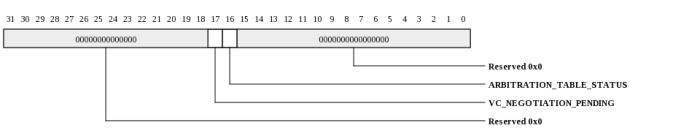
| Bits | Name | Type | Reset | Description
| 17 | VC_NEGOTIATION_PENDING | RO | 0 | |
| 16 | ARBITRATION_TABLE_STATUS | RO | 0 | |
|
|---|
ARI Capability Header (TRIO_PCIE_EP_ARI_CAP_HDR: 0x0160)
ARI Capability Header
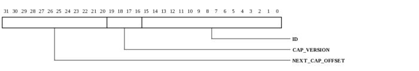
| Bits | Name | Type | Reset | Description
| 31:20 | NEXT_CAP_OFFSET | RO | 0 | |
| 19:16 | CAP_VERSION | RO | 1 | |
| 15:0 | ID | RO | 14 | PCI Express Extended Capability ID |
|
|---|
PF Power Budgeting Capability Register (TRIO_PCIE_EP_PF_POWER_BUDGETING_CAP: 0x0164)
PF Power Budgeting Capability Register
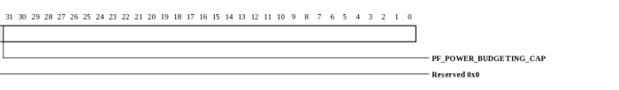
| Bits | Name | Type | Reset | Description
| 63:0 | PF_POWER_BUDGETING_CAP | RW | 0 | PF Power Budgeting Capability Register |
|
|---|
Power Budgeting Extended Capability Header (TRIO_PCIE_EP_POWER_BUDGETING_EXT_CAP_HDR: 0x0164)
Power Budgeting Extended Capability Header

| Bits | Name | Type | Reset | Description
| 31:20 | NEXT_CAP_OFFSET | RO | 0 | This read/write register indexes the Power Budgeting data reported through the Data register and selects the DWORD of Power Budgeting Data that should appear in the Data register. Index values for this register start at 0 to select the first DWORD of Power budgeting Data; subsequent DWORDs of power budgeting data are selected by increasing index values. |
| 19:16 | CAP_VERSION | RO | 1 | This field is a PCI-SIG defined version number that indicates the version of the capability structure present. Must be 0x1 as per the PCI Express 3.0 Specification. |
| 15:0 | EXT_CAP_ID | RO | 4 | This field is a PCI-SIG defined ID number that indicates the nature and format of the extended capability. Extended Capability ID for Power Budgeting capability is 0x0004. |
|
|---|
ARI Capability Register (TRIO_PCIE_EP_ARI_CAP: 0x0164)
ARI Capability Register
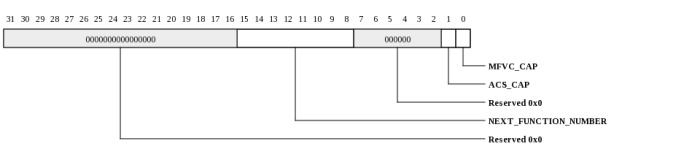
| Bits | Name | Type | Reset | Description
| 15:8 | NEXT_FUNCTION_NUMBER | RO | 0 | |
| 1 | ACS_CAP | RO | 0 | ACS Function Groups Capability (A) |
| 0 | MFVC_CAP | RO | 0 | MFVC Function Groups Capability (M) |
|
|---|
ARI Control Register (TRIO_PCIE_EP_ARI_CONTROL: 0x0166)
ARI Control Register

| Bits | Name | Type | Reset | Description
| 6:4 | FUNCTION_GROUP | RW | 0 | |
| 1 | ACS_ENA | RW | 0 | ACS Function Groups Enable (A) |
| 0 | MFVC_ENA | RW | 0 | MFVC Function Groups Enable (M) |
|
|---|
Data Select Register (TRIO_PCIE_EP_DATA_SELECT: 0x0168)
Data Select Register
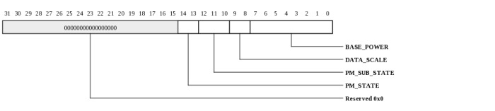
| Bits | Name | Type | Reset | Description
| 14:13 | PM_STATE | RO | 0 | Specifies the power management state of the operating condition being described: 00: D0 01: D1 10: D2 11: D3 A device returns 11b in this field and Aux or PME Aux in the Type register to specify the D3-Cold PM state. An encoding of 11b along with any other Type register value specifies the D3-Hot state. |
| 12:10 | PM_SUB_STATE | RO | 0 | Specifies the power management sub state of the operating condition being described: 000: Default sub state 001 - 111: Device-specific sub state |
| 9:8 | DATA_SCALE | RO | 0 | Specifies the scale to apply to the Base Power value. The device power consumption is determined by multiplying the contents of the Base Power register field with the value corresponding to the encoding returned by this field: 00: 1.0x 01: 0.1x 10: 0.01x 11: 0.001x |
| 7:0 | BASE_POWER | RO | 0 | Specifies (in watts) the base power value in the given operating condition. This value must be multiplied by the data scale to produce the actual power consumption value. |
|
|---|
PF Device Serial Number Capability Register (TRIO_PCIE_EP_PF_DEVICE_SERIAL_NUMBER_CAP: 0x016c)
PF Device Serial Number Capability Register
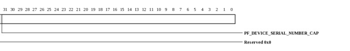
| Bits | Name | Type | Reset | Description
| 63:0 | PF_DEVICE_SERIAL_NUMBER_CAP | RW | 0 | PF Device Serial Number Capability Register |
|
|---|
Device Serial Number Extended Capability Header (TRIO_PCIE_EP_DEVICE_SERIAL_NUMBER_EXT_CAP_HDR: 0x016c)
Device Serial Number Extended Capability Header
| Bits | Name | Type | Reset | Description
| 31:20 | NEXT_CAP_OFFSET | RO | 0 | |
| 19:16 | CAP_VERSION | RW | 1 | |
| 15:0 | EXT_CAP_ID | RW | 3 | |
|
|---|
Serial Number Registers (TRIO_PCIE_EP_SERIAL_NUMBERS: 0x016c)
Serial Number Registers
| Bits | Name | Type | Reset | Description
| 63:0 | SERIAL_NUMBERS | RW | 0 | Serial Number Registers |
|
|---|
Power Budget Capability Register (TRIO_PCIE_EP_POWER_BUDGET_CAP: 0x016c)
Power Budget Capability Register
| Bits | Name | Type | Reset | Description
| 0 | SYSTEM_ALLOCATED | RW | 0 | This bit when set, indicates that the power budget for the device is included within the system power budget. Reported power budgeting data for this device should be ignored by software for power budgeting decisions if this bit is set. |
|
|---|
SR-IOV Capability Register (TRIO_PCIE_EP_SR_IOV_CAP: 0x0174)
SR-IOV Capability Register
| Bits | Name | Type | Reset | Description
| 31:21 | VF_MN | RO | 0 | VF Migration Interrupt Message Number |
| 0 | VF_MIGRATION_CAPABLE | RO | 0 | |
|
|---|
SR-IOV Control Register (TRIO_PCIE_EP_SR_IOV_CONTROL: 0x0178)
SR-IOV Control Register
| Bits | Name | Type | Reset | Description
| 4 | RESERVED | RW | 0 | |
| 3 | MSE | RW | 0 | |
| 2 | VF_MIGRATION_INTERRUPT_ENABLE | RO | 0 | |
| 1 | VF_MIGRATION_ENABLE | RO | 0 | |
| 0 | VF_ENABLE | RW | 0 | |
|
|---|
SR-IOV Status Register (TRIO_PCIE_EP_SR_IOV_STATUS: 0x017a)
SR-IOV Status Register
| Bits | Name | Type | Reset | Description
| 0 | VF_MIGRATION_STATUS | RO | 0 | |
|
|---|
InitialVFs Register (TRIO_PCIE_EP_INITIALVFS: 0x017c)
InitialVFs Register
| Bits | Name | Type | Reset | Description
| 15:0 | INITIALVFS | RO | 0020h | Used to indicate how many VFs are available to the host. Writable through the MAC_STANDARD interface. See PCIe SRIOV specification. |
|
|---|
TotalVFs Register (TRIO_PCIE_EP_TOTALVFS: 0x017e)
TotalVFs Register
| Bits | Name | Type | Reset | Description
| 15:0 | TOTALVFS | RO | 0020h | Used to indicate how many VFs are available to the host. Writable through the MAC_STANDARD interface. See PCIe SRIOV specification. |
|
|---|
NumVFs Register (TRIO_PCIE_EP_NUMVFS: 0x0180)
NumVFs Register

| Bits | Name | Type | Reset | Description
| 15:0 | VAL | RW | 0 | NumVFs, writable through the MAC_STANDARD interface, though is typically written by BIOS software. See PCIe SRIOV specification. |
|
|---|
Function Dependency Link (TRIO_PCIE_EP_FUNCTION_DEPENDENCY_LINK: 0x0182)
Function Dependency Link
| Bits | Name | Type | Reset | Description
| 7:0 | FUNCTION_DEPENDENCY_LINK | RO | 0 | |
|
|---|
First VF Offset (TRIO_PCIE_EP_FIRST_VF_OFFSET: 0x0184)
First VF Offset

| Bits | Name | Type | Reset | Description
| 15:0 | VAL | RO | 0 | First VF Offset, writable through the MAC_STANDARD interface |
|
|---|
VF Stride (TRIO_PCIE_EP_VF_STRIDE: 0x0186)
VF Stride

| Bits | Name | Type | Reset | Description
| 15:0 | VAL | RO | 0 | VF Stride, writable through the MAC_STANDARD interface |
|
|---|
VF Device ID (TRIO_PCIE_EP_VF_DEVICE_ID: 0x018a)
VF Device ID
| Bits | Name | Type | Reset | Description
| 15:0 | VAL | RO | 0 | VF Device ID, writable through the MAC_STANDARD interface |
|
|---|
Supported Page Sizes (TRIO_PCIE_EP_SUPPORTED_PAGE_SIZES: 0x018c)
Supported Page Sizes
| Bits | Name | Type | Reset | Description
| 31:0 | SUP_PG_SIZE | RO | 0 | Supported Page Sizes, writable through the MAC_STANDARD interface |
|
|---|
System Page Size (TRIO_PCIE_EP_SYSTEM_PAGE_SIZE: 0x0190)
System Page Size
| Bits | Name | Type | Reset | Description
| 31:0 | SYSTEM_PAGE_SIZE | RW | 1 | |
|
|---|
VF BAR0 (TRIO_PCIE_EP_VF_BAR0: 0x0194)
VF BAR0
| Bits | Name | Type | Reset | Description
| 31:4 | VF_BAR0 | RW | 0 | VF BAR0 base address (for a 64-bit BAR, the remaining upper address bits are in BAR 1). VF BAR0 is 1 MB by default. The VF_BAR0_MASK register, accessible via MAC_PROTECTED space, determines which address bits are masked and thus the BAR size. |
| 3 | PREF | RO | 0 | If VF BAR0 is a memory BAR, bit 3 indicates if the memory region is prefetchable: 0 = Non-prefetchable 1 = Prefetchable. This field is writable through the MAC_STANDARD interface. |
| 2:1 | IS_64_BIT | RO | 1 | If VF BAR0 is a memory BAR, bits [2:1] determine the BAR type: 0 = 32-bit BAR 2 = 64-bit BAR . This field is writable through the MAC_STANDARD interface. |
| 0 | IO | RO | 0 | Always zero. IO BARs are not supported for SRIOV. |
|
|---|
VF Base Address0 Mask Register (TRIO_PCIE_EP_VF_BAR0_MASK: 0x0194)
VF Base Address0 mask used to size bar0. This register is write only and is only accessible via the MAC_PROTECTED register space.

| Bits | Name | Type | Reset | Description
| 31:8 | MASK | WO | 000fffh | Indicates which BAR0 address to mask. For example, to set BAR0 to be 8 MB, the MASK field would be set to 0x7fff |
| 0 | ENA | WO | 1 | When 1, bar0 is enabled. When 0, the MASK is reset to all zeros. When setting ENA to 1, the BAR0_MASK must be written again after the ENA is written to set the size. |
|
|---|
VF BAR1 (TRIO_PCIE_EP_VF_BAR1: 0x0198)
VF BAR1
| Bits | Name | Type | Reset | Description
| 31:4 | VF_BAR1 | RW | 0 | VF BAR1 base address (for a 64-bit BAR0, this register has the upper 32 bits). VF BAR1 is 1 MB by default. The VF_BAR1_MASK register, accessible via MAC_PROTECTED space, determines which address bits are masked and thus the BAR size. |
| 3 | PREF | RO | 0 | If VF BAR1 is a memory BAR, bit 3 indicates if the memory region is prefetchable: 0 = Non-prefetchable 1 = Prefetchable. This field is writable through the MAC_STANDARD interface. |
| 2:1 | IS_64_BIT | RO | 1 | If VF BAR1 is a memory BAR, bits [2:1] determine the BAR type: 0 = 32-bit BAR 2 = 64-bit BAR . This field is writable through the MAC_STANDARD interface. |
| 0 | IO | RO | 0 | Always zero. IO BARs are not supported for SRIOV. |
|
|---|
VF Base Address1 Mask Register (TRIO_PCIE_EP_VF_BAR1_MASK: 0x0198)
VF Base Address1 mask used to size bar1. This register is write only and is only accessible via the MAC_PROTECTED register space.

| Bits | Name | Type | Reset | Description
| 31:8 | MASK | WO | 0 | Indicates which BAR1 address to mask. For example, to set BAR1 to be 8 MB, the MASK field would be set to 0x7fff |
| 0 | ENA | WO | 0 | When 1, bar1 is enabled. When 0, the MASK is reset to all zeros. When setting ENA to 1, the BAR1_MASK must be written again after the ENA is written to set the size. |
|
|---|
VF BAR2 (TRIO_PCIE_EP_VF_BAR2: 0x019c)
VF BAR2
| Bits | Name | Type | Reset | Description
| 31:4 | VF_BAR2 | RW | 0 | VF BAR2 base address (for a 64-bit BAR, the remaining upper address bits are in BAR 3). VF BAR2 is 32 MB by default. The VF_BAR2_MASK register, accessible via MAC_PROTECTED space, determines which address bits are masked and thus the BAR size. |
| 3 | PREF | RO | 0 | If VF BAR2 is a memory BAR, bit 3 indicates if the memory region is prefetchable: 0 = Non-prefetchable 1 = Prefetchable. This field is writable through the MAC_STANDARD interface. |
| 2:1 | IS_64_BIT | RO | 1 | If VF BAR2 is a memory BAR, bits [2:1] determine the BAR type: 0 = 32-bit BAR 2 = 64-bit BAR . This field is writable through the MAC_STANDARD interface. |
| 0 | IO | RO | 0 | Always zero. IO BARs are not supported for SRIOV. |
|
|---|
VF Base Address2 Mask Register (TRIO_PCIE_EP_VF_BAR2_MASK: 0x019c)
VF Base Address2 mask used to size bar2. This register is write only and is only accessible via the MAC_PROTECTED register space.

| Bits | Name | Type | Reset | Description
| 31:8 | MASK | WO | 01ffffh | Indicates which BAR2 address to mask. For example, to set BAR2 to be 8 MB, the MASK field would be set to 0x7fff |
| 0 | ENA | WO | 1 | When 1, bar2 is enabled. When 0, the MASK is reset to all zeros. When setting ENA to 1, the BAR2_MASK must be written again after the ENA is written to set the size. |
|
|---|
VF BAR3 (TRIO_PCIE_EP_VF_BAR3: 0x01a0)
VF BAR3
| Bits | Name | Type | Reset | Description
| 31:4 | VF_BAR3 | RW | 0 | VF BAR3 base address. |
| 3 | PREF | RO | 0 | If VF BAR3 is a memory BAR, bit 3 indicates if the memory region is prefetchable: 0 = Non-prefetchable 1 = Prefetchable. This field is writable through the MAC_STANDARD interface. |
| 2:1 | IS_64_BIT | RO | 0 | If VF BAR3 is a memory BAR, bits [2:1] determine the BAR type: 0 = 32-bit BAR 2 = 64-bit BAR . This field is writable through the MAC_STANDARD interface. |
| 0 | IO | RO | 0 | Always zero. IO BARs are not supported for SRIOV. |
|
|---|
VF Base Address3 Mask Register (TRIO_PCIE_EP_VF_BAR3_MASK: 0x01a0)
VF Base Address3 mask used to size bar3. This register is write only and is only accessible via the MAC_PROTECTED register space.
| Bits | Name | Type | Reset | Description
| 31:8 | MASK | WO | 0 | Indicates which BAR3 address to mask. |
| 0 | ENA | WO | 0 | When 1, bar3 is enabled. When 0, the MASK is reset to all zeros. When setting ENA to 1, the BAR3_MASK must be written again after the ENA is written to set the size. |
|
|---|
VF BAR4 (TRIO_PCIE_EP_VF_BAR4: 0x01a4)
VF BAR4
| Bits | Name | Type | Reset | Description
| 31:4 | VF_BAR4 | RW | 0 | VF BAR4 base address. |
| 3 | PREF | RO | 0 | If VF BAR4 is a memory BAR, bit 3 indicates if the memory region is prefetchable: 0 = Non-prefetchable 1 = Prefetchable. This field is writable through the MAC_STANDARD interface. |
| 2:1 | IS_64_BIT | RO | 0 | If VF BAR4 is a memory BAR, bits [2:1] determine the BAR type: 0 = 32-bit BAR 2 = 64-bit BAR . This field is writable through the MAC_STANDARD interface. |
| 0 | IO | RO | 0 | Always zero. IO BARs are not supported for SRIOV. |
|
|---|
VF Base Address4 Mask Register (TRIO_PCIE_EP_VF_BAR4_MASK: 0x01a4)
VF Base Address4 mask used to size bar4. This register is write only and is only accessible via the MAC_PROTECTED register space.

| Bits | Name | Type | Reset | Description
| 31:8 | MASK | WO | 0 | Indicates which BAR4 address to mask. For example, to set BAR4 to be 8 MB, the MASK field would be set to 0x7fff |
| 0 | ENA | WO | 0 | When 1, bar4 is enabled. When 0, the MASK is reset to all zeros. When setting ENA to 1, the BAR4_MASK must be written again after the ENA is written to set the size. |
|
|---|
VF BAR5 (TRIO_PCIE_EP_VF_BAR5: 0x01a8)
VF BAR5
| Bits | Name | Type | Reset | Description
| 31:4 | VF_BAR5 | RW | 0 | VF BAR5 base address . |
| 3 | PREF | RO | 0 | If VF BAR5 is a memory BAR, bit 3 indicates if the memory region is prefetchable: 0 = Non-prefetchable 1 = Prefetchable. This field is writable through the MAC_STANDARD interface. |
| 2:1 | IS_64_BIT | RO | 0 | If VF BAR5 is a memory BAR, bits [2:1] determine the BAR type: 0 = 32-bit BAR 2 = 64-bit BAR . This field is writable through the MAC_STANDARD interface. |
| 0 | IO | RO | 0 | Always zero. IO BARs are not supported for SRIOV. |
|
|---|
VF Base Address5 Mask Register (TRIO_PCIE_EP_VF_BAR5_MASK: 0x01a8)
VF Base Address5 mask used to size bar5. This register is write only and is only accessible via the MAC_PROTECTED register space.

| Bits | Name | Type | Reset | Description
| 31:8 | MASK | WO | 0 | Indicates which BAR5 address to mask. |
| 0 | ENA | WO | 0 | When 1, bar5 is enabled. When 0, the MASK is reset to all zeros. When setting ENA to 1, the BAR5_MASK must be written again after the ENA is written to set the size. |
|
|---|
VF Migration State (TRIO_PCIE_EP_VF_MIGRATION_STATE: 0x01ac)
VF Migration State
| Bits | Name | Type | Reset | Description
| 31:3 | VF_MIGRATION_STATE_OFFSET | RO | 0 | |
| 2:0 | VF_MIGRATION_STATE_BIR | RO | 0 | |
|
|---|
Ack Latency Timer and Replay Timer Register (TRIO_PCIE_EP_ACK_LATENCY_TIMER_REPLAY_TIMER: 0x0700)
Ack Latency Timer and Replay Timer Register
| Bits | Name | Type | Reset | Description
| 31:16 | REPLAY_TIME_LIMIT | RW | 308dh | The replay timer expires when it reaches this limit. The MAC initiates a replay upon reception of a Nak or when the replay timer expires. The default is updated based on the Negotiated Link Width and Max_Payload_Size. Note: If operating at 5 Gb/s, then an additional 153 is added. This is for additional internal processing for received TLPs and transmitted DLLPs. |
| 15:0 | ROUND_TRIP_LATENCY_TIME_LIMIT | RW | 102fh | The Ack/Nak latency timer expires when it reaches this limit. The default is updated based on the Negotiated Link Width and Max_Payload_Size. Note: If operating at 5 Gb/s, then an additional 51 is added. This is for additional internal processing for received TLPs and transmitted DLLPs. |
|
|---|
Other Message Register (TRIO_PCIE_EP_OTHER_MESSAGE: 0x0704)
Other Message Register
| Bits | Name | Type | Reset | Description
| 31:0 | OTHER_MESSAGE | RW | ffffffffh | Used to send a specific PCI Express Message, the application writes the payload of the Message into this register, then sets bit 0 of the Port Link Control Register to send the Message. |
|
|---|
Port Force Link Register (TRIO_PCIE_EP_PORT_FORCE_LINK: 0x0708)
Port Force Link Register. This register is for diagnostics only. Writing may result in unpredictable link behavior.
| Bits | Name | Type | Reset | Description
| 31:24 | LOW_POWER_ENTRANCE_COUNT | RW | 7 | The Power Management state will wait for this many clock cycles for the associated completion of a CfgWr to D-state register to go low-power. Note: Only used in EP mode |
| 21:16 | LINK_STATE | RW | 0 | The Link state that the MAC will be forced to when bit 15 (Force Link) is set.
| Value | Name | Meaning |
|---|
| 0x0 | DETECT_QUIET | |
| 0x1 | DETECT_ACT | |
| 0x2 | POLL_ACTIVE | |
| 0x3 | POLL_COMPLIANCE | |
| 0x4 | POLL_CONFIG | |
| 0x5 | PRE_DETECT_QUIET | |
| 0x6 | DETECT_WAIT | |
| 0x7 | CFG_LINKWD_START | |
| 0x8 | CFG_LINKWD_ACEPT | |
| 0x9 | CFG_LANENUM_WAIT | |
| 0xa | CFG_LANENUM_ACEPT | |
| 0xb | CFG_COMPLETE | |
| 0xc | CFG_IDLE | |
| 0xd | RCVRY_LOCK | |
| 0xe | RCVRY_SPEED | |
| 0xf | RCVRY_RCVRCFG | |
| 0x10 | RCVRY_IDLE | |
| 0x20 | RCVRY_EQ0 | |
| 0x21 | RCVRY_EQ1 | |
| 0x22 | RCVRY_EQ2 | |
| 0x23 | RCVRY_EQ3 | |
| 0x11 | L0 | |
| 0x12 | L0S | |
| 0x13 | L123_SEND_EIDLE | |
| 0x14 | L1_IDLE | |
| 0x15 | L2_IDLE | |
| 0x16 | L2_WAKE | |
| 0x17 | DISABLED_ENTRY | |
| 0x18 | DISABLED_IDLE | |
| 0x19 | DISABLED | |
| 0x1a | LPBK_ENTRY | |
| 0x1b | LPBK_ACTIVE | |
| 0x1c | LPBK_EXIT | |
| 0x1d | LPBK_EXIT_TIMEOUT | |
| 0x1e | HOT_RESET_ENTRY | |
| 0x1f | HOT_RESET | |
|
| 15 | FORCE_LINK | WO | 0 | When written with a 1, forces the Link and link command based on the LINK_STATE and LTSSM_CMD fields. |
| 11:8 | LTSSM_CMD | RW | 0 | Force link control command.
| Value | Name | Meaning |
|---|
| 1 | SEND_IDLE | |
| 2 | SEND_EIDLE | |
| 3 | XMT_IN_EIDLE | |
| 5 | SEND_RCVR_DETECT_SEQ | |
| 6 | SEND_TS1 | |
| 7 | SEND_TS2 | |
| 8 | COMPLIANCE_PATTERN | |
| 9 | SEND_SDS | |
| 10 | SEND_BEACON | |
| 11 | SEND_N_FTS | |
| 12 | NORM | |
| 13 | SEND_SKP | |
| 4 | MOD_COMPL_PATTERN | |
| 14 | SEND_EIES | |
| 15 | SEND_EIES_SYM | |
|
| 7:0 | LINK_NUMBER | RW | 0 | Not used for Endpoint |
|
|---|
Ack Frequency and L0-L1 ASPM Control Register (TRIO_PCIE_EP_ACK_FREQUENCY_L0_L1_ASPM_CONTROL: 0x070c)
Ack Frequency and L0-L1 ASPM Control Register
| Bits | Name | Type | Reset | Description
| 30 | ASPM_L1_DIR | RW | 0 | Enter ASPM L1 without receive in L0s. Allow MAC to enter ASPM L1 even when link partner did not go to L0s (receive is not in L0s). When not set, MAC goes to ASPM L1 only after idle period during which both receive and transmit are in L0s. |
| 29:27 | L1_ENTRANCE_LATENCY | RW | 0 | Values correspond to: 000: 1 s 001: 2 s 010: 4 s 011: 8 s 100: 16 s 101: 32 s 110 or 111: 64 s |
| 26:24 | L0S_ENTRANCE_LATENCY | RW | 0 | Values correspond to: 000: 1 s 001: 2 s 010: 3 s 011: 4 s 100: 5 s 101: 6 s 110 or 111: 7 s |
| 23:16 | COMMON_CLOCK_N_FTS | RW | 0 | This is the N_FTS when common clock is used. The number of Fast Training Sequence ordered sets to be transmitted when transitioning from L0s to L0. The maximum number of FTS ordered-sets that a component can request is 255. Note: The MAC does not support a value of zero; a value of zero can cause the LTSSM to go into the recovery state when exiting from L0s. |
| 15:8 | N_FTS | RW | 0 | The number of Fast Training Sequence ordered sets to be transmitted when transitioning from L0s to L0. The maximum number of FTS ordered-sets that a component can request is 255. Note: The MAC does not support a value of zero; a value of zero can cause the LTSSM to go into the recovery state when exiting from L0s. |
| 7:0 | ACK_FREQUENCY | RW | 0 | The MAC accumulates the number of pending Ack s specified here (up to 255) before sending an Ack DLLP |
|
|---|
Port Link Control Register (TRIO_PCIE_EP_PORT_LINK_CONTROL: 0x0710)
Port Link Control Register
| Bits | Name | Type | Reset | Description
| 23 | CL_ACT | RO | 0 | Crosslink Active. Indicates a change from upstream to downstream or downstream to upstream. Same as output xmlh_crosslink_active. |
| 22 | CROSSLINK_ENABLE | RW | 0 | |
| 21:16 | LINK_MODE_ENABLE | RW | 0 | 000001: x1 000011: x2 000111: x4 001111: x8 011111: x16 111111: x32 |
| 7 | FAST_LINK_MODE | RW | 0 | Sets all internal timers to fast mode for internal testing purposes. |
| 5 | DLL_LINK_ENABLE | RW | 1 | Enables Link initialization. If DLL Link Enable = 0, the MAC does not transmit InitFC DLLPs and does not establish a Link. |
| 3 | RESET_ASSERT | RW | 0 | Triggers a recovery and forces the LTSSM to the Hot Reset state (downstream port only). |
| 2 | LOOPBACK_ENABLE | RW | 0 | Turns on loopback. |
| 1 | SCRAMBLE_DISABLE | RW | 0 | Turns off data scrambling. |
| 0 | OTHER_MESSAGE_REQUEST | RW | 0 | When software writes a 1 to this bit, the MAC transmits the Message contained in the Other Message register. |
|
|---|
Lane Skew Register (TRIO_PCIE_EP_LANE_SKEW: 0x0714)
Lane Skew Register
| Bits | Name | Type | Reset | Description
| 31 | DISABLE_LANE_TO_LANE_DESKEW | RW | 0 | Causes the MAC to disable the internal Lane-to-Lane deskew logic. |
| 25 | ACK_NAK_DISABLE | RW | 0 | Prevents the MAC from sending Ack and Nak DLLPs. |
| 24 | FLOW_CTLDISABLE | RW | 0 | Prevents the MAC from sending FC DLLPs. |
| 23:0 | INS_SKEW | RW | 0 | Insert Lane Skew for Transmit causes the MAC to insert skew between Lanes for test purposes. There are three bits per Lane. The value is in units of one symbol time. For example, the value 010b for a Lane forces a skew of two symbol times for that Lane. The maximum skew value for any Lane is 5 symbol times. |
|
|---|
Symbol Number Register (TRIO_PCIE_EP_SYMBOL_NUMBER: 0x0718)
Symbol Number Register
| Bits | Name | Type | Reset | Description
| 31:29 | MAX_FN | RW | 0 | Configuration Requests targeted at function numbers above this value will be returned with UR (unsupported request). |
| 28:24 | TMR_MOD_FC | RW | 0 | Timer Modifier for Flow Control Watchdog TimerIncreases the timer value for the Flow Control watchdog timer, in increments of 16 clock cycles. |
| 23:19 | TMR_MOD_ACK | RW | 0 | Timer Modifier for Ack/Nak Latency Timer Increases the timer value for the Ack/Nak latency timer, in increments of |
| 18:14 | TMR_MOD_RPL | RW | 0 | Timer Modifier for Replay TimerIncreases the timer value for the replay timer, in increments of 64 clock cycles. |
| 10:8 | NUMBER_OF_SKP_SYMBOLS | RW | 3 | |
| 3:0 | NUMBER_OF_TS_SYMBOLS | RW | 10 | Sets the number of TS identifier symbols that are sent in TS1 and TS2 ordered sets. |
|
|---|
Symbol Timer Register and Filter Mask 1 (TRIO_PCIE_EP_SYMBOL_TIMER_FILTER_MASK_1: 0x071c)
Symbol Timer Register and Filter Mask 1
| Bits | Name | Type | Reset | Description
| 31:16 | RX_FILT_MASK | RW | 0 | Mask RADM Filtering and Error Handling Rules: Mask 1 There are several mask bits to turn off the filtering and error handling rules . In each case, 0 applies the associated filtering rule and 1 masks the associated filtering rule. A more detailed description for these bits is provided in Table 4-348. [31]: Mask filtering of received Configuration Requests (RC mode only) [30]: Mask filtering of received I/O Requests (RC mode only) [29]: Send Message TLPs to the application on RTRGT1 and send decoded Message on the SII (1) or send decoded Message on the SII, then drop the Message TLPs (0). . Note that this bit only controls message TLPs other than Vendor MSGs. Vendor MSGs are controlled by Filter Mask Register 2, bits [1:0]. [28]: Mask ECRC error filtering for Completions [27]: Mask ECRC error filtering [26]: Mask Length mismatch error for received Completions [25]: Mask Attributes mismatch error for received Completions [24]: Mask Traffic Class mismatch error for received Completions [23]: Mask function mismatch error for received Completions [23]: Mask Requester ID mismatch error for received Completions [21]: Mask Tag error rules for received Completions [20]: Mask Locked Request filtering [19]: Mask Type 1 Configuration Request filtering [18]: Mask BAR match filtering [17]: Mask poisoned TLP filtering [16]: Mask function mismatch filtering for incoming Requests |
| 15 | DISABLE_FC_WATCHDOG_TIMER | RW | 0 | |
| 10:0 | SKP_INTERVAL_VALUE | RW | 500h | The number of symbol times to wait between transmitting SKP ordered sets. Note that the MAC actually waits the number of symbol times in this register plus 1 between transmitting SKP ordered sets. The application must program this register accordingly. For example, if 1536 we're programmed into this register, then the MAC will actually transmit Skp ordered sets once every 1537 symbol times. Also, the value programmed to this register is actually clock ticks and not symbol times. |
|
|---|
Filter Mask 1 (TRIO_PCIE_EP_FILTER_MASK_1: 0x071c)
Filter Mask 1
| Bits | Name | Type | Reset | Description
| 31 | CFG | RW | 0 | 0: For RADM RC filter to not allow CFG transaction being received 1: For RADM RC filter to allow CFG transaction being received |
| 30 | IO | RW | 0 | 0: For RADM RC filter to not allow IO transaction being received 1: For RADM RC filter to allow IO transaction being received |
| 29 | MSG | RW | 0 | 0: Drop MSG TLP (except for Vendor MSG) 1 - Do not Drop MSG (except for Vendor MSG) |
| 28 | CPL_ECRC | RW | 0 | 0: Discard TLPs with ECRC errors for CPL type 1: Allow TLPs with ECRC errors to be passed up for CPL type |
| 27 | ECRC | RW | 0 | 0: Discard TLPs with ECRC errors 1: Allow TLPs with ECRC errors to be passed up |
| 26 | LEN | RW | 0 | 0: Enforce length match for received CPL TLPs; a violation results in cpl_abort, and possibly AER of unexp_cpl_err 1: MASK length match for received CPL TLPs |
| 25 | CPL_ATTR | RW | 0 | 0: Enforce attribute match for received CPL TLPs; a violation results in a malformed TLP error, and possibly AER of unexp_cpl_err, cpl_rcvd_ur, cpl_rcvd_ca 1: Mask attribute match for received CPL TLPs |
| 24 | CPL_TC | RW | 0 | 0: Enforce Traffic Class match for received CPL TLPs; a violation results in a malformed TLP error, and possibly AER of unexp_cpl_err, cpl_rcvd_ur, cpl_rcvd_ca 1: Mask Traffic Class match for received CPL TLPs |
| 23 | CPL_FN | RW | 0 | 0: Enforce function match for received CPL TLPs; a violation results in cpl_abort, and possibly AER of unexp_cpl_err, cpl_rcvd_ur, cpl_rcvd_ca 1: Mask function match for received CPL TLPs |
| 22 | CPL_REQID | RW | 0 | 0: Enforce Req. Id match for received CPL TLPs; a violation result in cpl_abort, and possibly AER of unexp_cpl_err, cpl_rcvd_ur, cpl_rcvd_ca 1: Mask Req. Id match for received CPL TLPs |
| 21 | CPL_TAGERR | RW | 0 | 0: Enforce Tag Error Rules for received CPL TLPs; a violation result in cpl_abort, and possibly AER of unexp_cpl_err, cpl_rcvd_ur, cpl_rcvd_ca 1: Mask Tag Error Rules for received CPL TLPs |
| 20 | LOCK_UR | RW | 0 | 0: Treat locked Read TLPs as UR for EP; Supported for RC 1: Treat locked Read TLPs as Supported for EP; UR for RC |
|
|---|
Filter Mask 2 (TRIO_PCIE_EP_FILTER_MASK_2: 0x0720)
Filter Mask 2

| Bits | Name | Type | Reset | Description
| 31:0 | VAL | RW | 0 | Mask RADM Filtering and Error Handling Rules: Mask 2There are several mask bits used to turn off the filtering and error handling rules. [31:4]: Reserved [3]: Disable MAC Filter to handle flush request - 1: Enable MAC Filter to handle flush request [2]: 0: Enable DLLP abort for unexpected CPL - 1: Do not enable DLLP abort for unexpected CPL [1]: 0: Vendor MSG Type 1 dropped silently - 1: Vendor MSG Type 1 not dropped [0]: 0: Vendor MSG Type 0 dropped with UR error reporting - 1: Vendor MSG Type 0 not dropped 1: Mask RADM Filtering and Error Handling Rules |
|
|---|
Debug Register 0 (TRIO_PCIE_EP_DEBUG_0: 0x0728)
Debug Register 0

| Bits | Name | Type | Reset | Description
| 31:0 | VAL | RO | 0 | Diagnostics debug info[31:0]. |
|
|---|
Debug Register 1 (TRIO_PCIE_EP_DEBUG_1: 0x072c)
Debug Register 1
| Bits | Name | Type | Reset | Description
| 31:0 | VAL | RO | 0 | Diagnostics debug info[63:32]. |
|
|---|
Transmit Posted FC Credit Status (TRIO_PCIE_EP_TRANSMIT_POSTED_FC_CREDIT_STATUS: 0x0734)
Transmit Posted FC Credit Status

| Bits | Name | Type | Reset | Description
| 19:12 | HDR | RO | 0 | Transmit Posted Header FC Credits The Posted Header credits advertised by the receiver at the other end of the Link, updated with each UpdateFC DLLP. |
| 11:0 | DAT | RO | 0 | Transmit Posted Data FC Credits The Posted Data credits advertised by the receiver at the other end of the Link, updated with each UpdateFC DLLP. |
|
|---|
Transmit Non-Posted FC Credit Status (TRIO_PCIE_EP_TRANSMIT_NON_POSTED_FC_CREDIT_STATUS: 0x0734)
Transmit Non-Posted FC Credit Status

| Bits | Name | Type | Reset | Description
| 19:12 | HDR | RO | 0 | Transmit Non-Posted Header FC Credits The Non-Posted Header credits advertised by the receiver at the other end of the Link, updated with each UpdateFC DLLP. |
| 11:0 | DAT | RO | 0 | Transmit Non-Posted Data FC Credits The Non-Posted Data credits advertised by the receiver at the other end of the Link, updated with each UpdateFC DLLP. |
|
|---|
Transmit Completion FC Credit Status (TRIO_PCIE_EP_TRANSMIT_COMPLETION_FC_CREDIT_STATUS: 0x073c)
Transmit Completion FC Credit Status
| Bits | Name | Type | Reset | Description
| 19:12 | HDR | RO | 0 | Transmit Completion Header FC Credits The Completion Header credits advertised by the receiver at the other end of the Link, updated with each UpdateFC DLLP. |
| 11:0 | DAT | RO | 0 | Transmit Completion Data FC Credits The Completion Data credits advertised by the receiver at the other end of the Link, updated with each UpdateFC DLLP. |
|
|---|
Queue Status (TRIO_PCIE_EP_QUEUE_STATUS: 0x073c)
Queue Status
| Bits | Name | Type | Reset | Description
| 2 | RECEIVED_QUEUE_NOT_EMPTY | RO | 0 | Indicates there is data in one or more of the receive buffers. |
| 1 | RETRY_NOT_EMPTY | RO | 0 | Transmit Retry Buffer Not Empty Indicates that there is data in the transmit retry buffer. |
| 0 | RCV_PND | RO | 0 | Received TLP FC Credits Not Returned Indicates that the MAC has sent a TLP but has not yet received an UpdateFC DLLP indicating that the credits for that TLP have been restored by the receiver at the other end of the Link. Note: This bit is for internal testing only and will always read as 0. |
|
|---|
VC0 Posted Receive Queue Control (TRIO_PCIE_EP_VC0_POSTED_RECEIVE_QUEUE_CONTROL: 0x0748)
VC0 Posted Receive Queue Control
| Bits | Name | Type | Reset | Description
| 31 | VC_ORDERING | RW | 0 | Determines the VC ordering rule for the receive queues, used only in the segmented-buffer configuration, writable through the MAC_STANDARD interface: 1: Strict ordering, higher numbered VCs have higher priority 0: Round robin Table 4-359 VC0 Posted Receive Queue Control (Continued) Bits Default Attr Description |
| 30 | TLP_ORDERING | RW | 0 | Determines the TLP type ordering rule for VC0 receive queues, used only in the segmented-buffer configuration, writable through the MAC_STANDARD interface: 1: Ordering of received TLPs follows the rules in PCI Express 3.0 Specification. 0: Strict ordering for received TLPs: Posted, then Completion, then Non-Posted |
| 23:21 | QUEUE_MODE | RW | 0 | The operating mode of the Posted receive queue for VC0, used only in the segmented-buffer configuration, writable through the MAC_STANDARD interface. Only one bit can be set at a time: Bit 23: Bypass Bit 22: Cut-through Bit 21: Store-and-forward |
| 19:12 | HDR | RO | 0 | The number of initial Posted header credits for VC0, used for all receive queue buffer configurations. This field is writable through the MAC_STANDARD interface |
| 11:0 | DAT | RO | 0 | The number of initial Posted data credits for VC0, used for all receive queue buffer configurations. This field is writable through the MAC_STANDARD interface |
|
|---|
VC0 Non-Posted Receive Queue Control (TRIO_PCIE_EP_VC0_NON_POSTED_RECEIVE_QUEUE_CONTROL: 0x074c)
VC0 Non-Posted Receive Queue Control

| Bits | Name | Type | Reset | Description
| 23:21 | QUEUE_MODE | RW | 0 | The operating mode of the Non-Posted receive queue for VC0, used only in the segmented-buffer configuration, writable through the MAC_STANDARD interface. Only one bit can be set at a time: Bit 23: Bypass Bit 22: Cut-through Bit 21: Store-and-forward |
| 19:12 | HDR | RO | 0 | VC0 Non-Posted Header Credits The number of initial Non-Posted header credits for VC0, used for all receive queue buffer configurations. This field is writable through the MAC_STANDARD interface. |
| 11:0 | DAT | RO | 0 | The number of initial Non-Posted data credits for VC0, used for all receive queue buffer configurations. This field is writable through the MAC_STANDARD interface if |
|
|---|
VC0 Completion Receive Queue Control (TRIO_PCIE_EP_VC0_COMPLETION_RECEIVE_QUEUE_CONTROL: 0x0750)
VC0 Completion Receive Queue Control
| Bits | Name | Type | Reset | Description
| 23:21 | QUEUE_MODE | RW | 0 | The operating mode of the Completion receive queue for VC0, used only in the segmented-buffer configuration, writable through the MAC_STANDARD interface. Only one bit can be set at a time: Bit 23: Bypass Bit 22: Cut-through Bit 21: Store-and-forward |
| 19:12 | HDR | RO | 0 | VC0 Completion Header Credits The number of initial Completion header credits for VC0, used for all receive queue buffer configurations. This field is writable through the MAC_STANDARD interface. |
| 11:0 | DAT | RO | 0 | The number of initial Completion data credits for VC0, used for all receive queue buffer configurations. This field is writable through the MAC_STANDARD interface. |
|
|---|
VC0 Posted Buffer Depth Control (TRIO_PCIE_EP_VC0_POSTED_BUF_DEPTH_CONTROL: 0x07a8)
VC0 Posted Buffer Depth Control

| Bits | Name | Type | Reset | Description
| 25:16 | HDR | RO | 0 | VC0 Posted Header Queue Depth Sets the number of entries in the Posted header queue for VC0 when using the segmented-buffer configuration. Writable through the MAC_STANDARD interface. |
| 13:0 | DATA | RO | 0 | Sets the number of entries in the Posted data queue for VC0 when using the segmented-buffer configuration. Writable through the MAC_STANDARD interface. |
|
|---|
VC0 Non-Posted Buffer Depth Control (TRIO_PCIE_EP_VC0_NON_POSTED_BUF_DEPTH_CONTROL: 0x07ac)
VC0 Non-Posted Buffer Depth Control
| Bits | Name | Type | Reset | Description
| 25:16 | HDR | RO | 0 | VC0 Non-Posted Header Queue Depth Sets the number of entries in the Non-Posted header queue for VC0 when using the segmented-buffer configuration. Writable through the MAC_STANDARD interface. |
| 13:0 | DATA | RO | 0 | VC0 Non-Posted Data Queue Depth Sets the number of entries in the Non-Posted data queue for VC0 when using the segmented-buffer configuration. Writable through the MAC_STANDARD interface. |
|
|---|
VC0 Completion Buffer Depth Control (TRIO_PCIE_EP_VC0_COMPLETION_BUF_DEPTH_CONTROL: 0x07b0)
VC0 Completion Buffer Depth Control

| Bits | Name | Type | Reset | Description
| 25:16 | HDR | RO | 0 | VC0 Posted Header Queue Depth Sets the number of entries in the Completion header queue for VC0 when using the segmented-buffer configuration. Writable through the MAC_STANDARD interface. |
| 13:0 | DATA | RO | 0 | VC0 Completion Data Queue Depth Sets the number of entries in the Completion data queue for VC0 when using the segmented-buffer configuration. Writable through the MAC_STANDARD interface. |
|
|---|
Gen2 Control Register (TRIO_PCIE_EP_GEN2_CONTROL: 0x080c)
Gen2 Control Register
| Bits | Name | Type | Reset | Description
| 20 | DEEMP | RW | 0 | Used to set the de-emphasis level for upstream ports. |
| 19 | TX_COMP | RW | 0 | Config Tx Compliance Receive Bit When set to 1, signals LTSSM to transmit TS ordered sets with the compliance receive bit assert (equal to 1). |
| 18 | CONFIG_PHY_TX_SWING | RW | 0 | Indicates the voltage level the PHY should drive. When set to 1, indicates Full Swing. When set to 0, indicates Low Swing |
| 17 | DIRECTED_SPEED_CHANGE | RW | 0 | Indicates to the LTSSM whether or not to initiate a speed change to Gen2 or Gen3 after the link is initialized at Gen1 speed. |
| 16:8 | LANE_ENABLE | RW | 0 | Indicates the number of lanes to check for exit from electrical idle in Polling.Active and Polling.Compliance. 1 = x1, 2 = x2, etc. Used to limit the maximum link width to ignore -Y broken lanes that detect a receiver, but will not exit electrical idle and would otherwise prevent a valid link from being configured. |
| 7:0 | N_FTS | RW | 0 | Sets the Number of Fast Training Sequences (N_FTS) that the MAC advertises as its N_FTS during Gen2 or Gen3 Link training. This value is used to inform the Link partner about the PHYs ability to recover synchronization after a low power state. Note: Do not set N_FTS to zero; doing so can cause the LTSSM to go into the recovery state when exiting from L0s. |
|
|---|
MSI Controller Address Register (TRIO_PCIE_EP_MSI_CONTROLLER_ADDRESS: 0x0820)
MSI Controller Address Register
| Bits | Name | Type | Reset | Description
| 31:0 | MSI_CONTROLLER_ADDR | RW | 0 | System specified address for MSI memory write transaction termination. Within the AHB/AXI Bridge, every received Memory Write Request is examined to see if it targets the MSI Address that has been specified in the MSI Controller Address Register and also to see if it satisfies the definition of an MSI Interrupt Request. If these conditions are satisfied the Memory Write Request is marked as an MSI Request. |
|
|---|
MSI Controller Upper Address Register (TRIO_PCIE_EP_MSI_CONTROLLER_UPPER_ADDRESS: 0x0824)
MSI Controller Upper Address Register
| Bits | Name | Type | Reset | Description
| 31:0 | MSI_CONTROLLER_UPPER_ADDR | RW | 0 | System specified upper address for MSI memory write transaction termination. Allows functions to support a 64- bit MSI address. |
|
|---|
MSI Controller Interrupt#n Enable Register (TRIO_PCIE_EP_MSI_CONTROLLER_INTERRUPT_N_ENABLE: 0x0828-0x087f stride: 12)
MSI Controller Interrupt#n Enable Register. There are 8 sets of ENABLE/MASK/STATUS registers.
| Bits | Name | Type | Reset | Description
| 31:0 | MSI_INTERRUPT_N_ENABLE | RW | 0 | Specifies which interrupts are enabled. If an MSI is received from a disabled interrupt, no status bit gets set in MSI Controller Interrupt Status Register. Each bit corresponds to a single MSI Interrupt Vector. |
|
|---|
MSI Controller Interrupt#n Mask Register (TRIO_PCIE_EP_MSI_CONTROLLER_INTERRUPT_N_MASK: 0x082c-0x0883 stride: 12)
MSI Controller Interrupt#n Mask Register
| Bits | Name | Type | Reset | Description
| 31:0 | MSI_INTERRUPT_N_MASK | RW | 0 | Allows enabled interrupts to be masked. If an MSI is received for a masked interrupt, the corresponding status bit gets set in the Interrupt Status Register but the msi_ctrl_int output is not set HIGH. Each bit corresponds to a single MSI Interrupt Vector. |
|
|---|
MSI Controller Interrupt#n Status Register (TRIO_PCIE_EP_MSI_CONTROLLER_INTERRUPT_N_STATUS: 0x0830-0x0887 stride: 12)
MSI Controller Interrupt#0 Status Register
| Bits | Name | Type | Reset | Description
| 31:0 | MSI_INTERRUPT_N_STATUS | RW | 0 | If an MSI is detected for EP#0, one bit in this register is set. The decoding of the data payload of the MSI Memory Write Request determines which bit gets set. A status is bit is cleared by writing a 1 to the bit. Each bit corresponds to a single MSI Interrupt Vector. |
|
|---|
MSI Controller General Purpose IO Register (TRIO_PCIE_EP_MSI_CONTROLLER_GENERAL_PURPOSE_IO: 0x0888)
MSI Controller General Purpose IO Register
| Bits | Name | Type | Reset | Description
| 31:0 | MSI_GPIO | RW | 0 | The contents of this register drives the top-level output msi_ctrl_io[31:0] |
|
|---|
iATU Viewport Register (TRIO_PCIE_EP_IATU_VIEWPORT: 0x0900)
iATU Viewport Register
| Bits | Name | Type | Reset | Description
| 31 | REGION_DIRECTION | RW | 0 | Defines the region being accessed as either 0: Outbound 1: Inbound |
| 3:0 | REGION_INDEX | RW | 0 | Defines which region is being accessed when writing to the control, base, limit and target registers. Must not be set to a number greater than CX_ATU_NUM_OUTBOUND_REGIONS - 1 when an outbound region is being accessed. Must not be set to a value greater than CX_ATU_NUM_INBOUND_REGIONS - 1 when an inbound region is being accessed |
|
|---|
iATU Register Map (TRIO_PCIE_EP_IATU_MAP: 0x0900)
iATU Register Map
| Bits | Name | Type | Reset | Description
| 63:0 | IATU_MAP | RW | 0 | iATU Register Map |
|
|---|
iATU Region Control 1 Register (TRIO_PCIE_EP_IATU_REGION_CTL1: 0x0904)
iATU Region Control 1 Register
| Bits | Name | Type | Reset | Description
| 23 | RSVDZ | RW | 0 | Virtual Function Active |
| 22:20 | FUNCTION_NUMBER | RW | 0 | Outbound: When the address of an outbound TLP is matched to this region, then the function number used in generating the Function part of the Requester ID (RID) field of the TLP is taken from this 3-bit register. Inbound: When the Address and BAR matching logic in the MAC indicate that a MEM/IO transaction matches a BAR in the function corresponding to this value then address translation will proceed. This check is only performed if the Function Number Match Enable bit of the iATU Control 2 Register is set. |
| 17:16 | AT | RW | 0 | Outbound: When the address of an outbound TLP is matched to this region, then the AT field of the TLP is changed to the value in this register. Only valid when the ATS_TX_ENABLE configuration parameter is 1. Inbound: When the TYPE field of an inbound TLP is matched to this value, then address translation will proceed. This check is only performed if the AT Match Enable bit of the iATU Control 2 Register is set. Only valid when the ATS_RX_ENABLE configuration parameter is 1. |
| 10:9 | ATTR | RW | 0 | Outbound: When the address of an outbound TLP is matched to this region, then the ATTR field of the TLP is changed to the value in this register. Inbound: When the ATTR field of an inbound TLP is matched to this value, then address translation will proceed. This check is only performed if the ATTR Match Enable bit of the iATU Control 2 Register is set. |
| 8 | TD | RW | 0 | Outbound: When the address of an outbound TLP is matched to this region, then the TD field of the TLP is changed to the value in this register. Inbound: When the TD field of an inbound TLP is matched to this value, then address translation will proceed. This check is only performed if the TD Match Enable bit of the iATU Control 2 Register is set. |
| 7:5 | TC | RW | 0 | Outbound: When the address of an outbound TLP is matched to this region, then the TC field of the TLP is changed to the value in this register. Inbound: When the TC field of an inbound TLP is matched to this value, then address translation will proceed. This check is only performed if the -Y TC Match Enable bit of the iATU Control 2 Register is set. |
| 4:0 | TYPE | RW | 0 | Outbound: When the address of an outbound TLP is matched to this region, then the TYPE field of the TLP is changed to the value in this register. Inbound: When the TYPE field of an inbound TLP is matched to this value, then address translation will proceed. |
|
|---|
iATU Region Control 2 Register (TRIO_PCIE_EP_IATU_REGION_CTL2: 0x0908)
iATU Region Control 2 Register
| Bits | Name | Type | Reset | Description
| 31 | REGION_ENABLE | RW | 0 | Outbound / Inbound: This bit must be set to 1 for address translation to take place. 1. If all other enabled field-matches are successful. Table 4-441 iATU Region Control 2 Register (Continued) Bits Default Attr Description |
| 30 | MATCH_MODE | RW | 0 | Outbound: Not used. Inbound: Determines the Inbound matching mode for MEM/IO TLPs. 0: Address Mode. The iATU operates using addresses as in the Outbound direction. The Region Base and Limit Registers must be setup. 1: BAR Mode. BAR matching is used. The BAR Number field is relevant. Must only be configured for regions configured for MEM or IO transactions. |
| 29 | INVERT_MODE | RW | 0 | Outbound / Inbound: When set the address matching region is inverted. Therefore, an address match occurs when the untranslated address is in the region outside the defined range (Base Address to Limit Address). |
| 28 | CFG_SHIFT_MODE | RW | 0 | This is useful for CFG transactions where the PCIe configuration mechanism maps bits [27:12] of the address to the bus/device and function number. This allows a CFG configuration space to be located in any 256 MB window of the application memory space using a 28-bit effective address. Outbound: Shifts bits [27:12] of the untranslated address to form bits [31:16] of the translated address. Inbound: Shifts bits [31:16] of the untranslated address to form bits [27:12] of the translated address. |
| 27 | FUZZY_TYPE_MATCH_MODE | RW | 0 | Outbound: Not used. Inbound: When enabled, the iATU relaxes the matching of the TLP TYPE field against the expected TYPE field so that CfgRd0 and CfgRd1 TLPs are seen as identical. Similarly with CfgWr0 and CfgWr1. MRd and MRdLk TLPs are seen as identical The Routing field of Msg/MsgD TLPs is ignored For example, CFG0 in the TYPE field in the iATU Control 1 Register will match against an inbound CfgRd0, CfgRd1, CfgWr0 or CfgWr1 TLP. |
| 25:24 | RESPONSE_CODE | RW | 0 | Outbound: Not used. Inbound: Defines the type of response to give for accesses matching this region. This overrides the normal RADM filter response. 00 - Normal RADM filter response is used. 01 - Unsupported Request (UR) 10 - Completer Abort (CA) 11 - Not used / undefined / reserved. |
| 21 | MESSAGE_CODE_MATCH_ENABLE | RW | 0 | Outbound: Not used. Inbound: Ensures that a successful Message Code TLP field comparison match (see Message Code field of the -Y iATU Control 1 Register ) occurs (in MSG transactions) for address translation to proceed. |
| 20 | VFN_MATCH | RW | 0 | Virtual Function Number Match Enable Outbound: Not used. Inbound: Ensures that a successful Virtual Function Number TLP field comparison match (see Virtual Function Number field of the -Y iATU Control 1 Register ) occurs (in MEM/IO transactions) for address translation to proceed. Note: This bit must not be set at the same time as Function Number Match Enable . |
| 19 | FUNCTION_NUMBER_MATCH_ENABLE | RW | 0 | Outbound: Not used. Inbound: Ensures that a successful Function Number TLP field comparison match (see Function Number field of the iATU Control 1 Register ) occurs (in MEM/IO transactions) for address translation to proceed. Note: This bit must not be set at the same time as Virtual Function Number Match Enable . |
| 18 | AT_MATCH_ENABLE | RW | 0 | Outbound: Not used. Inbound: Ensures that a successful AT TLP field comparison match (see AT field of the iATU Control 1 Register ) occurs for address translation to proceed. Only valid when the ATS_RX_ENABLE configuration parameter is 1. |
| 16 | ATTR_MATCH_ENABLE | RW | 0 | Outbound: Not used. Inbound: Ensures that a successful ATTR TLP field comparison match (see ATTR field of the iATU Control 1 Register ) occurs for address translation to proceed. |
| 15 | TD_MATCH_ENABLE | RW | 0 | Outbound: Not used. Inbound: Ensures that a successful TD TLP field comparison match (see TD field of the iATU Control 1 Register ) occurs for address translation to proceed. |
| 14 | TC_MATCH_ENABLE | RW | 0 | Outbound: Not used. Inbound: Ensures that a successful TC TLP field comparison match (see TC field of the iATU Control 1 Register ) occurs for address translation to proceed. |
| 10:8 | BAR_NUMBER | RW | 0 | Outbound: Not used. Inbound: When the BAR number of an inbound MEM or IO TLP that is matched by the normal internal BAR address matching mechanism is the same as this field, address translation will proceed. This check is only performed if the Match Mode bit of the iATU Control 2 Register is set. 000b - BAR#0 001b - BAR#1 010b - BAR#2 011b - BAR#3 100b - BAR#4 101b - BAR#5 110b - ROM 111b - reserved IO translation would require either 00100b or 00101b in the inbound TLP TYPE; the BAR Number set in the range 000b - 101b and that BAR configured as an IO BAR. |
| 7:0 | MESSAGE_CODE | RW | 0 | Outbound: When the address of an outbound TLP is matched to this region, and the translated TLP TYPE field is MSG; then the Message field of the TLP is changed to the value in this register. Inbound: When the TYPE field of an inbound MSG TLP is matched to this value, then address translation will proceed. This check is only performed if the Function Message Code Match Enable bit of the iATU Control 2 Register is set. |
|
|---|
iATU Lower Base Address Register (TRIO_PCIE_EP_IATU_LOWER_BASE_ADDRESS: 0x0914)
iATU Lower Base Address Register
| Bits | Name | Type | Reset | Description
| 63:0 | IATU_LOWER_BASE_ADDRESS | RW | 0 | iATU Lower Base Address Register |
|
|---|
iATU Upper Base Address Register (TRIO_PCIE_EP_IATU_UPPER_BASE_ADDRESS: 0x0914)
iATU Upper Base Address Register

| Bits | Name | Type | Reset | Description
| 31:0 | VAL | RW | 0 | Outbound / Inbound: Forms bits [63:32] of the start (and end) address of the address region to be translated. Outbound: In systems with a 32-bit address space, this register is not used and therefore writing to this register has no effect. |
|
|---|
iATU Limit Address Register (TRIO_PCIE_EP_IATU_LIMIT_ADDRESS: 0x0914)
iATU Limit Address Register
| Bits | Name | Type | Reset | Description
| 63:0 | IATU_LIMIT_ADDRESS | RW | 0 | iATU Limit Address Register |
|
|---|
iATU Outbound Region Lo Address Register (TRIO_PCIE_EP_IATU_OUTBOUND_REGION_LO_ADDRESS: 0x091c)
iATU Outbound Region Lo Address Register
| Bits | Name | Type | Reset | Description
| 63:0 | IATU_OUTBOUND_REGION_LO_ADDRESS | RW | 0 | iATU Outbound Region Lo Address Register |
|
|---|
iATU Upper Target Address Register (TRIO_PCIE_EP_IATU_UPPER_TARGET_ADDRESS: 0x091c)
iATU Upper Target Address Register

| Bits | Name | Type | Reset | Description
| 31:0 | VAL | RW | 0 | Outbound / Inbound: Forms bits [63:32] of the start address of the new address of the translated region. Inbound: In systems with a 32-bit address space, this register is not used and therefore writing to this register has no effect. |
|
|---|
Copyright © 2014 Tilera® Corporation. All rights reserved.
Printed in the United States of America.
No part of this book may be reproduced, stored in a retrieval system,
or transmitted in any form or by any means, electronic, mechanical,
photocopying, recording, or otherwise, except as may be expressly permitted
by the applicable copyright statutes or in writing by the Publisher.
The following are registered trademarks of Tilera Corporation: Tilera
and the Tilera logo. The following are trademarks of Tilera
Corporation: Embedding Multicore, The Multicore Company, Tile
Processor, TILE Architecture, TILE64, TILEPro, TILEPro36, TILEPro64,
TILExpress, TILExpress-64, TILExpressPro-64, TILExpress-20G,
TILExpressPro-20G, TILExpressPro-22G, iMesh, TileDirect, TILEmpower,
TILEmpower-Gx, TILEncore, TILEncorePro, TILEncore-Gx, TILE-Gx,
TILE-Gx16, TILE-Gx36, TILE-Gx64, TILE-Gx100, TILE-Gx3000, TILE-Gx5000,
TILE-Gx8000, DDC (Dynamic Distributed Cache), Multicore Development
Environment, Gentle Slope Programming, iLib, TMC (Tilera Multicore
Components), hardwall, Zero Overhead Linux (ZOL), MiCA (Multicore
iMesh Coprocessing Accelerator), and mPIPE (multicore Programmable
Intelligent Packet Engine). All other trademarks and/or registered
trademarks are the property of their respective owners.
Third-party software: The Tilera IDE makes use of the BeanShell scripting
library. Source code for the BeanShell library can be found at the
BeanShell website (http://www.beanshell.org/developer.html).
The following is a trademark of Marvell Semiconductor, Inc.: Distributed
Switching Architecture (DSA).
This document contains advance information on Tilera products that are
in development, sampling or initial production phases. This information
and specifications contained herein are subject to change without notice
at the discretion of Tilera Corporation.
No license, express or implied by estoppels or otherwise, to any
intellectual property is granted by this document. Tilera disclaims any
express or implied warranty relating to the sale and/or use of Tilera
products, including liability or warranties relating to fitness for
a particular purpose, merchantability or infringement of any patent,
copyright or other intellectual property right.
Products described in this document are NOT intended for use in medical,
life support, or other hazardous uses where malfunction could result in
death or bodily injury.
THE INFORMATION CONTAINED IN THIS DOCUMENT IS PROVIDED ON AN "AS IS"
BASIS. Tilera assumes no liability for damages arising directly or
indirectly from any use of the information contained in this document.